СТРОИТЕЛЬНЫЕ НОРМЫ И ПРАВИЛА
ТЕПЛОВЫЕ СЕТИ
СНиП 2.04.07-86*
МИНСТРОЙ РОССИИ
МОСКВА 1994
РАЗРАБОТАНЫ ВНИПИэнергопромом (канд. техн. наук Я.А. Ковылянский - руководитель темы; Л.И. Жуковская, А.И. Коротков, В.И. Трахтенберг, А.И. Михельсон, А.А. Шереметова, Л.И. Макарова) и ВГНИПИ Теплоэлектропроект Минэнерго СССР (И.В. Беляйкина); ВНИПИ Теплопроект Минмонтажспецстроя СССР (В.В. Попова, Л.А. Ставрицкая); МНИИТЭП ГлавАПУ Мосгорисполкома (канд. техн. наук В.И. Ливчак), ЦНИИЭП инженерного оборудования Госгражданстроя (О.Г. Лоодус, Э.А. Качура) с участием ВТИ им. Ф.Э. Дзержинского Минэнерго СССР, Донецкого Промстройниипроекта, НИИОСП им. Н.М. Герсеванова Госстроя СССР, ЦНИИЭП жилища и ЦНИИЭП учебных зданий Госгражданстроя.
ВНЕСЕНЫ Министерством энергетики и электрификации СССР.
ПОДГОТОВЛЕНЫ К УТВЕРЖДЕНИЮ Управлением стандартизации и технических норм в строительстве Госстроя СССР (Г.М. Хорин, И.М. Губакина, В.А. Глухарев).
СНиП 2.04.07-86* является переизданием СНиП 2.04.07-86 с изменением № 1, утвержденным постановлением Госстроя России от 21 января 1994 г. № 18-4 и с учетом изменений вызванных введением в действие СНиП 2.04.14-88.
Внесено изменение № 2, утвержденное постановлением Госстроя России от 12 октября 2001 г. № 116 и введенное в действие с 01.01.2002 г.
Номера пунктов и приложений, в которые внесены изменения, отмечены звездочкой.
|
Государственный строительный комитет СССР |
Строительные нормы и правила |
СНиП 2.04.07-86* |
|
Тепловые сети |
Взамен |
1.1.* Настоящие нормы следует соблюдать при проектировании тепловых сетей, транспортирующих горячую воду с температурой до 200 °С и давлением Ру до 2,5 МПа и водяной пар с температурой до 440 °С и давлением Ру до 6,3 МПа, и сооружений на них (насосных, павильонов и др.).
Требования норм распространяются на водяные (включая сети горячего водоснабжения), паровые и конденсатные тепловые сети от выходных задвижек наружных коллекторов или стен источников теплоты до выходной запорной арматуры тепловых пунктов зданий и сооружений.
При проектировании тепловых сетей и сооружений на них следует также соблюдать требования других нормативных документов, утвержденных или согласованных с Минстроем России.
Пункт 1.2 исключить.
1.3. Для тепловых сетей районов с расходом теплоты 100 МВт и более, как правило, следует предусматривать ремонтно-эксплуатационные базы.
2.1. Максимальные тепловые потоки на отопление Qomax, вентиляцию Qvmax и горячее водоснабжение Qhmax жилых, общественных и производственных зданий следует принимать при проектировании тепловых сетей по соответствующим проектам.
При отсутствии проектов допускается определять тепловые потоки в соответствии с требованиями п. 2.4.
2.2. Максимальные тепловые потоки на технологические процессы и количество возвращаемого конденсата надлежит принимать по проектам промышленных предприятий.
При определении суммарного максимального теплового потока для предприятий следует учитывать несовпадение максимумов тепловых потоков на технологические процессы с учетом отраслевой принадлежности промпредприятий и соотношения тепловых нагрузок каждой отрасли в структуре теплопотребления района.
2.3. Средние тепловые потоки на горячее водоснабжение Qhm зданий следует определять по нормам расхода горячей воды в соответствии со СНиП 2.04.01-85.
|
Внесены |
Утверждены |
Срок введения в действие |
2.4.* Тепловые потоки при отсутствии проектов отопления, вентиляции и горячего водоснабжения зданий и сооружений определяются:
для предприятий - по укрупненным ведомственным нормам, утвержденным в установленном порядке, либо по проектам аналогичных предприятий;
для жилых районов городов и других населенных пунктов - по формулам:
а) максимальный тепловой поток, Вт, на отопление жилых и общественных зданий
(1)
б) максимальный тепловой поток, Вт, на вентиляцию общественных зданий
(2)
в) средний тепловой поток, Вт, на горячее водоснабжение жилых и общественных зданий
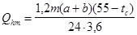
или
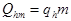
г) максимальный тепловой поток, Вт, на горячее водоснабжение жилых и общественных зданий
(5)
где k1 - коэффициент, учитывающий тепловой поток на отопление общественных зданий; при отсутствии данных следует принимать равным 0,25;
k2 - коэффициент, учитывающий тепловой поток на вентиляцию общественных зданий; при отсутствии данных следует принимать равным: для общественных зданий, построенных до 1985 г. - 0,4, после 1985 г. - 0,6.
2.5. Средний тепловой поток на отопление жилых районов населенных пунктов, Вт, следует определять по формуле
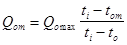
то же, на вентиляцию, Вт, при to
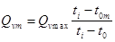
2.6*. Средний тепловой поток, Вт, на горячее водоснабжение жилых районов населенных пунктов в неотапливаемый период следует определять по формуле:
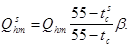
2.7. При определении суммарных тепловых потоков жилых и общественных зданий присоединяемых к тепловым сетям, следует учитывать также тепловые потоки на горячее водоснабжение существующих зданий подлежащих централизованному теплоснабжению, в том числе не имеющих централизованных систем горячего водоснабжения или оборудованных газовыми колонками.
2.8*. Потери теплоты в тепловых сетях следует определять расчетом с учетом тепловых потерь через изолированные поверхности трубопроводов и со среднегодовыми утечками теплоносителя.
2.9*. Годовые расходы теплоты жилыми и общественными зданиями следует определять по рекомендуемому приложению 22*.
Годовые расходы теплоты предприятиями определяются исходя из числа дней работы предприятия в году, количества смен работы в сутки с учетом режима теплопотребления предприятия. Для действующих предприятий годовые расходы теплоты допускается определять по эксплуатационным данным или по ведомственным нормам.
3.1*. В тепловых сетях должно предусматриваться резервирование подачи теплоты потребителям за счет совместной работы источников теплоты, прокладки резервных трубопроводов, а также устройства перемычек между тепловыми сетями смежных районов.
При подземной прокладке тепловых сетей в непроходных каналах и бесканальной прокладке резервная подача теплоты предусматривается в зависимости от расчетной температуры наружного воздуха для отопления и диаметров трубопроводов, принимаемых по табл. 1.
Таблица 1
|
Расчетная температура наружного воздуха для проектирования отопления t0, °С |
|||||
|
минус 10 |
минус 20 |
минус 30 |
минус 40 |
минус 50 |
|
|
Допустимое снижение подачи теплоты, %, до |
|||||
|
300 |
- |
- |
- |
- |
50 |
|
400 |
- |
- |
- |
50 |
60 |
|
500 |
- |
- |
50 |
60 |
70 |
|
600 |
- |
50 |
60 |
70 |
80 |
|
700 и более |
50 |
60 |
70 |
80 |
90 |
|
Примечание. Знак «минус» означает, что резервной подачи теплоты не требуется. |
|||||
Максимальная длина тупиковых участков тепловых сетей (от источников теплоты или от резервируемой части сети до наиболее удаленного потребителя), которые не подлежат резервированию согласно табл. 1 (для трубопроводов диаметром 300 - 600 мм), не должна превышать величин, приведенных в табл. 1, а.
Таблица 1а
|
Расчетная температура наружного воздуха для проектирования отопления t0, °С |
|||||
|
минус 10 |
минус 20 |
минус 30 |
минус 40 |
минус 50 |
|
|
Подземная в непоходных каналах и бесканальная |
8,0 |
7,5 |
7,0 |
6,5 |
6,0 |
|
Примечание. Тупиковые участки длиной более приведенных необходимо резервировать, допуская снижение подачи теплоты потребителям до 50 %. |
|||||
При надземной прокладке тепловых сетей следует предусматривать резервирование подачи теплоты в размере не менее 70 % в районах с расчетными температурами воздуха для проектирования отопления ниже минус 40 °С при диаметрах трубопроводов 1200-1400 мм.
Резервирование подачи теплоты по сетям, прокладываемым в тоннелях, допускается не предусматривать.
3.2. Для зданий, в которых не допускаются перерывы в подаче теплоты (больницы, детские дошкольные учреждения с круглосуточным пребыванием детей, картинные галереи и т.п., устанавливаемые в задании на проектирование), следует предусматривать резервирование, обеспечивающее 100 % подачу теплоты сетями. Допускается предусматривать местные резервные источники теплоты.
3.3. Для предприятий, в которых не допускаются перерывы в теплоснабжении, следует предусматривать резервирование подачи теплоты тепловыми сетями.
Расчетные аварийные расходы теплоты следует принимать в соответствии с режимом работы предприятий. Допускается предусматривать местные резервные источники теплоты.
Примечание: Номенклатура зданий и сооружений предприятий, для которых не допускаются перерывы в подаче теплоты, должна устанавливаться министерствами и ведомствами, в ведении которых они находятся, и указываться в задании на проектирование тепловых сетей.
3.4. Выбор системы теплоснабжения следует определять на основании технико-экономических расчетов с учетом качества исходной воды, степени обеспеченности ею и поддержания требуемого качества горячей воды у потребителей.
Для открытых и закрытых систем теплоснабжения с вакуумной деаэрацией следует использовать воду по ГОСТ 2874-82.
Для закрытых систем теплоснабжения при наличии термической деаэрации допускается использовать техническую воду.
Использование доочищенных хозяйственно-питьевых сточных вод не допускается.
3.5. Водяные тепловые сети надлежит принимать, как правило, двухтрубными, подающими одновременно теплоту на отопление, вентиляцию, горячее водоснабжение и технологические нужды. Одно- и трехтрубные тепловые сети допускается принимать при технико-экономическом обосновании.
Самостоятельные тепловые сети для присоединения технологических потребителей теплоты допускается предусматривать, если качество и параметры теплоносителя отличаются от принятых в тепловых сетях.
Технологические аппараты, от которых могут поступать в общие тепловые сети вредные вещества, должны присоединяться к тепловым сетям через водонагреватели с дополнительным промежуточным циркуляционным контуром между аппаратом и водоподогревателем при обеспечении давления в промежуточном контуре ниже, чем в тепловой сети. При этом следует предусматривать установку пробоотборных точек для контроля за наличием вредных примесей.
3.6*. Расчетный расход воды для подпитки водяных тепловых сетей, емкость баков-аккумуляторов в открытых системах теплоснабжения и баков запаса подпиточной воды - в закрытых, а также требования по их установке приведены в обязательном приложении 23.
3.7. Баки-аккумуляторы горячей воды у потребителей должны предусматриваться в системах горячего водоснабжения промышленных предприятий для выравнивания сменного графика потребления воды объемами, имеющими сосредоточенные кратковременные расходы воды на горячее водоснабжение.
Для объектов промышленных предприятий, имеющих отношение среднего теплового потока на горячее водоснабжение к максимальному тепловому потоку на отопление меньше 0,2, баки-аккумуляторы не устанавливаются.
3.8. Системы горячего водоснабжения потребителей должны присоединяться к двухтрубным водяным тепловым сетям в открытых системах теплоснабжения непосредственно к подающему и обратному трубопроводам, а в закрытых - через водоподогреватели.
Системы горячего водоснабжения потребителей к паровым сетям должны присоединяться через пароводяные водоподогреватели.
3.9. Системы отопления и вентиляции потребителей должны присоединяться к двухтрубным водяным тепловым сетям непосредственно (зависимая схема присоединения).
По независимой схеме, предусматривающей установку в тепловых пунктах водоподогревателей, допускается присоединять при обосновании системы отопления и вентиляции зданий 12 этажей и выше и других потребителей, если независимое присоединение обусловлено гидравлическим режимом работы тепловых сетей.
3.10. Присоединение потребителей с расходом теплоты менее 4 МВт к тепловым сетям с тепловым потоком более 100 МВт, как правило, не допускается.
3.11. Системы сбора и возврата конденсата источнику теплоты следует предусматривать закрытыми; при этом избыточное давления в сборных баках конденсата должно быть не менее 0,005 МПа
Открытые системы сбора и возврата конденсата допускается предусматривать при количестве возвращаемого конденсата менее 10 т/ч и расстоянии до источника теплоты до 0,5 км.
3.12. Отказ от полного возврата конденсата должен быть обоснован.
3.13. Возврат конденсата от потребителей должен предусматриваться за счет избыточного давления за конденсатоотводчиками, а при недостаточном давлении - за счет установки для одного или группы потребителей сборных баков конденсата и насосов для перекачки конденсата.
3.14. Возврат конденсата конденсатоотводчиками по общей сети допускается применять при разнице в давлении пара перед конденсатоотводчиками не более 0,3 МПа.
При возврате конденсата насосами число насосов, подающих конденсат в общую сеть, не ограничивается.
Параллельная работа насосов и конденсатоотводчиков, отводящих конденсат от потребителей пара на общую конденсатную сеть, не допускается.
3.15. Напорные конденсатопроводы следует рассчитывать по максимальному часовому расходу конденсата, исходя из условий работы трубопроводов полным сечением при всех режимах возврата конденсата и предохранения их от опорожнения при перерывах в подаче конденсата. Давление в сети конденсатопроводов при всех режимах должно приниматься избыточным. Конденсатопроводы от конденсатоотводчиков до сборных баков конденсата следует рассчитывать с учетом образования пароводяной смеси.
3.16. Удельные потери давления на трение в конденсатопроводах после насосов подлежит принимать не более 100 Па/м.
Конденсатопроводы после конденсатоотводчиков следует рассматривать по разнице между давлением за конденсатоотводчиками и давлением в сборном баке конденсата (или в расширительном бачке) с учетом высоты подъема конденсата.
Эквивалентная шероховатость внутренней поверхности конденсатопроводов должна приниматься 0,001 м.
3.17*. Емкость сборных баков конденсата должна приниматься не менее 10 максимального расхода конденсата. Число баков при круглогодичной работе надлежит принимать не менее двух, емкостью по 50 % каждый; при сезонной работе, а также при максимальном расходе конденсата до 5 т/ч допускается установка одного бака.
При контроле качества конденсата число баков следует принимать не менее трех с емкостью каждого, обеспечивающей по времени проведение анализа конденсата по всем необходимым показателям (п. 3.20), но не менее 30-минутного максимального поступлении конденсата.
3.18. Подача (производительность) насосов для перекачки конденсата должна определяться по максимальному часовому расходу конденсата.
Напор насоса должен определяться по величине потери давления в конденсатопроводе с учетом высоты подъема конденсата от насосной до сборного бака и величины избыточного давления в сборных баках.
Напор насосов, подающих конденсат в общую сеть, должен определяться с учетом условий их параллельной работы при всех режимах возврата конденсата.
Число насосов в каждой насосной следует принимать не менее двух, один из которых является резервным.
3.19. Постоянный и аварийный сброс конденсата в системы дождевой или бытовой канализации допускается после охлаждения его до температуры 40 °С. При сбросе в систему производственной канализации с постоянными стоками конденсат допускается не охлаждать.
3.20*. Возвращаемый от потребителей к источнику теплоты конденсат должен отвечать требованиям Правил технической эксплуатации электрических станций и сетей Минэнерго СССР.
Температура возвращаемого конденсата для закрытых систем не нормируется, для открытых - принимается не менее 95 °С.
Возврат конденсата с температурой ниже 95 °С для открытых систем допускается при обосновании.
3.21. В системах сбора и возврата конденсата следует предусматривать использование его теплоты для собственных нужд предприятия.
4.1. В системах централизованного теплоснабжения для отопления, вентиляции и горячего водоснабжения жилых, общественных и производственных зданий в качестве теплоносителя следует, как правило, принимать воду. Следует также проверять возможность применения воды как теплоносителя для технологических процессов.
Применение для предприятий в качестве единого теплоносителя пара для технологических процессов, отопления, вентиляции и горячего водоснабжения допускается при технико-экономическом обосновании.
Пункт 4.2 исключить.
4.3. Температура воды в системах горячего водоснабжения должна приниматься в соответствии со СНиП 2.04.01-85.
Пункт 4.4 исключить.
4.5. Регулирование отпуска теплоты предусматривается: центральное - на источнике теплоты, групповое - в узлах регулирования или в ЦТП, индивидуальное в ИТП.
Для водяных тепловых сетей следует принимать, как правило, качественное регулирование отпуска теплоты по нагрузке отопления или по совмещенной нагрузке отопления и горячего водоснабжения согласно графику изменения температуры воды в зависимости от температуры наружного воздуха.
При обосновании допускается регулирование отпуска теплоты - количественное, а также качественно-количественное.
4.6. При центральном качественном регулировании в системах теплоснабжения с преобладающей (более 65 %) жилищно-коммунальной нагрузкой следует принимать регулирование по совмещенной нагрузке отопления и горячего водоснабжения, а при тепловой нагрузке жилищно-коммунального сектора менее 65 % от суммарной тепловой нагрузки и доле средней нагрузки горячего водоснабжения менее 15 % от расчетной нагрузки отопления - регулирование по нагрузке отопления.
В обоих случаях центральное качественное регулирование отпуска теплоты ограничивается наименьшими температурами воды в подающем трубопроводе, необходимыми для подогрева воды, поступающей в системы горячего теплоснабжения потребителей:
для закрытых систем теплоснабжения - не менее 70 °С;
для открытых систем теплоснабжения - не менее 60 °С.
Примечание: При центральном качественном регулировании по совмещенной нагрузке отопления и горячего водоснабжения точка излома графика температур воды в подающем и обратном трубопроводах должна приниматься при температуре наружного воздуха, соответствующей точке излома графика регулирования по нагрузке отопления.
4.7. Для раздельных водяных тепловых сетей от одного источника теплоты к предприятиям и жилым районам допускается предусматривать разные графики температур воды:
для предприятий - по нагрузке отопления;
для жилых районов - по совмещенной нагрузке отопления и горячего водоснабжения.
4.8. При расчете графиков температур принимаются: начало и конец отопительного периода при температуре наружного воздуха 8 °C; усредненная расчетная температура внутреннего воздуха отапливаемых зданий для жилых районов 18 °С, для зданий предприятий - 16 °С.
4.9. В зданиях общественного и производственного назначения, для которых предусматривается снижение температуры воздуха в ночное и нерабочее время, следует обеспечивать регулирование температуры или расхода теплоносителя в тепловых пунктах.
Пункт 4.10 исключить.
5.1. Расчетный расход сетевой воды для определения диаметров труб в водяных тепловых сетях при качественном регулировании отпуска теплоты следует определять отдельно для отопления, вентиляции и горячего водоснабжения по формулам, приведенным в п. 5.2. с последующим суммированием этих расходов воды по формулам, приведенным в п. 5.3.
5.2*. Расчетные расходы воды, кг/ч., следует определять по формулам:
а) на отопление
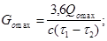
б) на вентиляцию
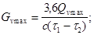
в) на горячее водоснабжение в открытых системах теплоснабжения:
средний -
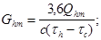
максимальный -
г) на горячее водоснабжение в закрытых системах теплоснабжения:
средний, при параллельной схеме присоединения водоподогревателей:
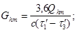
максимальный -
средний, при двухступенчатых схемах присоединения водоподогревателей:
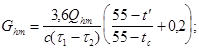
максимальный, при двухступенчатых схемах присоединения водоподогревателей:
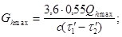
5.3. Суммарные расчетные расходы сетевой воды, кг/ч, в двухтрубных тепловых сетях в открытых и закрытых системах теплоснабжения при качественном регулировании отпуска теплоты следует определять по формуле:
Коэффициент k3, учитывающий долю среднего расхода воды на горячее водоснабжение при регулировании по нагрузке отопления, следует принимать по табл.2. При регулировании по совмещенной нагрузке отопления и горячего водоснабжения коэффициент k3 принимается равным 0.
Таблица 2
|
Значение коэффициента, k3 |
|
|
Открытая, МВт: |
|
|
100 и более |
0,6 |
|
менее 100 |
0,8 |
|
Закрытая, МВт: |
|
|
100 и более |
1,0 |
|
менее 100 |
1,2 |
|
Примечание. Для закрытых систем теплоснабжения при регулировании по нагрузке отопления и тепловом потоке менее 100 МВт при наличии банков-аккумуляторов у потребителей коэффициент k3 следует принимать равным 1. |
|
Для потребителей при 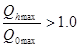
. (18)
5.4. Расчетный расход воды, кг/ч. в двухтрубных водяных тепловых сетях в неотопительный период следует определять по формуле
При этом максимальный расход воды на горячее водоснабжение, кг/ч, определяется для открытых систем теплоснабжения по формуле (12) при температуре холодной воды в неотопительный период, а для закрытых систем при всех схемах присоединения водоподогревателей горячего водоснабжения - по формуле (14).
Расход воды в обратном трубопроводе двухтрубных водяных тепловых сетей открытых систем теплоснабжения принимается в размере 10 % от расчетного расхода воды, определенного по формуле (19).
5.5*. Расчетный расход воды для определения диаметров подающих и циркуляционных трубопроводов и гидравлические расчеты в сетях горячего водоснабжения следует определять в соответствии со СНиП 2.04.01-85.
5.6. Суммарный расчетный расход пара в паровых тепловых сетях обеспечивающих предприятия с различными суточными режимами работы, следует определять с учетом несовпадения максимальных часовых расходов пара отдельными предприятиями.
При отсутствии проектных суточных графиков расхода пара допускается к суммарному расходу пара вводить понижающий коэффициент 0,9.
Для паропроводов насыщенного пара в суммарном расчетном расходе должно учитываться дополнительное количество пара для возмещения конденсации пара за счет потерь теплоты в трубопроводах.
5.7*. Формулы для расчета трубопроводов тепловых сетей приведены в рекомендуемом приложении 4. Эквивалентную шероховатость внутренней поверхности стальных труб следует принимать:
для паровых тепловых сетей - ke = 0,0002 м;
для водяных тепловых сетей - ke = 0,0005 м;
для сетей горячего водоснабжения - ke = 0,001 м.
Применение для расчета действующих тепловых сетей более высоких значений эквивалентных шероховатостей допускается только при подтверждении их фактической величины специальными испытаниями.
5.8. Удельные потери давления на трение при гидравлических расчетах водяных тепловых сетей следует определять на основании технико-экономических расчетов.
Величину удельных потерь давления для расчета действующих тепловых сетей допускается принимать на основании результатов испытаний.
Паровые тепловые сети следует рассчитывать по разнице давлений пара между источником теплоты и потребителями.
5.9. Диаметры подающего и обратного трубопроводов двухтрубных водяных тепловых сетей при совместной подаче теплоты на отопление, вентиляцию и горячее водоснабжение должны приниматься, как правило, одинаковыми.
5.10*. Условный проход труб Dу независимо от расчетного расхода теплоносителя должен приниматься в тепловых сетях - не менее 32 мм, а для циркуляционных трубопроводов горячего водоснабжения - не менее 25 мм.
5.11. Статическое давление в системах теплоснабжения при теплоносителе воде не должно превышать допускаемое давление в оборудовании источника теплоты, в водяных тепловых сетях, в оборудовании тепловых пунктов и в системах отопления, вентиляции и горячего водоснабжения потребителей, непосредственно присоединенных к тепловым сетям, и обеспечивать заполнение их водой.
Если статическое давление превышает допустимые пределы, то следует предусматривать деление водяных тепловых сетей на независимые зоны. Для поддержания статического давления в сетях, отключенных от источника теплоты, в узлах деления (узлах рассечки) следует предусматривать подпиточные устройства с использованием для подпитки воды из тепловых сетей смежной зоны, присоединенной к источнику теплоты.
Статическое давление должно определяться условно для температуры воды до 100 °С.
5.12. Давление воды в подающих трубопроводах водных тепловых сетей при работе сетевых насосов должно приниматься исходя из условий невскипания воды при ее максимальной температуре в любой точке подающего трубопровода, в оборудовании источника теплоты и в приборах систем потребителей, непосредственно присоединенных к тепловым сетям.
5.13. Давление воды в обратных трубопроводах водяных тепловых сетей при работе сетевых насосов должно быть избыточным (не менее 0,05 МПа), не превышать допускаемого давления в системах потребителей и обеспечивать заполнение местных систем.
5.14. Давление воды в обратных трубопроводах водяных тепловых сетей открытых систем теплоснабжения в неотопительный период, а также в подающем и циркуляционном трубопроводах сетей горячего водоснабжения следует принимать не менее чем на 0,05 МПа больше статического давления систем горячего водоснабжения потребителей.
5.15. Давление и температура воды на отсасывающих патрубках сетевых, подпиточных, подкачивающих и смесительных насосов не должны превышать допускаемых по условиям прочности конструкций насосов.
5.16. Гидравлические режимы водяных тепловых сетей (пьезометрические графики) следует разрабатывать для отопительного и неотопительного периодов, а также для аварийных режимов.
Для открытых систем теплоснабжения дополнительно разрабатываются два режима: при максимальном водоразборе из подающего и обратного трубопроводов в отопительный период.
5.17*. Расходы воды, кг/ч, в тепловых сетях открытых систем теплоснабжения для разработки гидравлических режимов при максимальном водоразборе из подающего или обратного трубопроводов определяются по формуле
Gd = Gomax + Gvmax + k4Ghm, (20)
где k4 - коэффициент, определяемый по расчету с учетом изменения среднего расхода воды на горячее водоснабжение в зависимости от температурного графика регулирования отпуска теплоты и режима водоразбора из тепловой сети. При отсутствии данных допускается определять по табл. 3.
Таблица 3
|
Трубопровод |
Значение коэффициента k4 при центральном качественном регулировании |
||
|
по нагрузке отопления |
по совмещенной нагрузке отопления и горячего водоснабжения |
||
|
Максимальный: |
|||
|
из подающего трубопровода |
Подающий |
1 |
1,4 |
|
Обратный |
-1,4 |
-1 |
|
|
из обратного трубопровода |
Подающий |
0,6 |
1,2 |
|
Обратный |
-1,8 |
-1,2 |
|
5.18. Напор сетевых насосов следует определять для отопительного и неотопительного периодов и принимать равным сумме потерь давления в установках на источнике теплоты, в подающем и обратном трубопроводах от источника теплоты до наиболее удаленного потребителя и в системе потребителя (включая потери в тепловых пунктах и насосных) при суммарных расчетных расходах воды.
Напор подкачивающих насосов на подающем и обратном трубопроводах следует определять по пьезометрическим графикам при максимальных расходах воды в трубопроводах с учетом гидравлических потерь в оборудовании и трубопроводах источника теплоты.
При установке на тепловых сетях подкачивающих насосов напор сетевых насосов на источниках теплоты следует уменьшать на величину рабочего напора подкачивающего насоса.
5.19. Напор подпиточных насосов должен определяться из условий поддержания в водяных тепловых сетях статического давления и проверяться для условий работы сетевых насосов в отопительный и неотопительный периоды.
Примечание. Допускается предусматривать установку отдельных групп подпиточных насосов с различными напорами для отопительного, неотопительного периодов и для статического режима.
5.20. Напор смесительных насосов (на перемычке) следует определять по наибольшему возможному перепаду давлений между подающим и обратным трубопроводами в узле установки насоса.
5.21*. Подачу (производительность) сетевых и подкачивающих (рабочих) насосов следует принимать:
а) насосов для открытых систем теплоснабжения в отопительный период - по суммарному расчетному расходу воды, определяемому по формуле (17);
б) на подающих трубопроводах тепловых сетей для открытых систем теплоснабжения в отопительный период - по суммарному расчетному расходу воды, определяемому по формуле (20), при k4 = 1,4; подкачивающих насосов на обратных трубопроводах - по формуле (17) при k3 = 0,6;
в) для закрытых и открытых систем теплоснабжения в неотопительный период - по максимальному расходу воды на горячее водоснабжение в неотопительный период - формуле (19).
Примечание. При определении производительности сетевых насосов в открытых системах теплоснабжения следует проверять необходимость учета дополнительного расхода воды для вакуумных деаэраторов.
5.22. Подачу (производительность) рабочих подпиточных насосов в закрытых системах теплоснабжения следует принимать равной расчетному расходу воды на компенсацию утечки из тепловой сети (приложение 23*), а в открытых системах - равной сумме максимального расхода воды на горячее водоснабжение [формула (12)] и расчетного расхода воды на компенсацию утечки (приложение 23*).
5.23. Число насосов следует принимать:
сетевых - не менее двух, один из которых является резервным при пяти рабочих сетевых насосах в одной группе резервный насос допускается не устанавливать;
подкачивающих и смесительных - не менее трех, один из которых является резервным, при этом резервный насос предусматривается независимо от числа рабочих насосов;
подпиточных - в закрытых системах теплоснабжения не менее двух, один из которых является резервным, в открытых системах - не менее трех, один из которых также является резервным;
в узлах деления водяной тепловой сети на зоны (в узлах рассечки) допускается в закрытых системах теплоснабжении устанавливать один подпиточный насос без резерва, а в открытых системах - один рабочий и один резервный.
Число насосов уточняется с учетом их совместной работы на тепловую сеть.
5.24. Перепад давлений на вводе двухтрубных водяных тепловых сетей в здания при определении напора сетевых насосов (при элеваторном присоединении систем отопления) следует принимать равным расчетным потерям давления на вводе и в местной системе с коэффициентом 1,5, но не менее 0,15 МПа.
6.1*. Выбор трассы тепловых сетей и способ прокладки следует предусматривать в соответствии с указаниями СНиП 1.02.01-85 и СНиП II-89-80.
Прокладка тепловых сетей по насыпям автомобильных дорог общей сети I, II и III категорий не допускается.
Тепловые сети, независимо от способа прокладки и системы теплоснабжения не должны проходить по территории кладбищ, свалок, скотомогильников, мест захоронения радиоактивных отходов, земледельческих полей орошения, полей фильтрации и других участков, представляющих опасность химического, биологического и радиоактивного загрязнения.
6.2.* В населенных пунктах для тепловых сетей предусматривается, как правило, подземная прокладка (бесканальная, в каналах или в городских и внутриквартальных тоннелях совместно с другими инженерными сетями).
При обосновании допускается надземная прокладка тепловых сетей кроме территорий детских и лечебных учреждений.
6.3. Прокладку тепловых сетей по территории, не подлежащей застройке вне населенных пунктов, следует предусматривать надземную на низких опорах.
6.4. При выборе трассы тепловых сетей допускается пересечение водяными сетями диаметром 300 мм и менее жилых и общественных зданий при условии прокладки сетей в технических подпольях, технических коридорах и тоннелях (высотой не менее 1,8 м) с устройством дренирующего колодца в нижней точке на выходе из здания.
Пересечение тепловыми сетями детских дошкольных, школьных и лечебно-профилактических учреждений не допускается.
6.5. Прокладка тепловых сетей при рабочем давлении пара выше 2,2 МПа и температуре выше 350 °С в непроходных каналах и общих городских или внутриквартальных тоннелях не допускается.
6.6. Уклон тепловых сетей независимо от направления движения теплоносителя и способа прокладки должен быть не менее 0,002. При катковых и шариковых опорах уклон не должен превышать
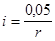
где r - радиус катка или шарика, см.
Уклон тепловых сетей к отдельным зданиям при подземной прокладке должен приниматься от зданий к ближайшей камере.
На отдельных участках (при пересечении коммуникаций, прокладке по мостам и т.п.) допускается принимать прокладку тепловых сетей без уклона.
6.7*. Подземную прокладку тепловых сетей допускается принимать совместно с перечисленными инженерными сетями:
в каналах - с водопроводами, трубопроводами сжатого воздуха давлением до 1,6 МПа, мазутопроводами, контрольными кабелями, предназначенными для обслуживания тепловых сетей;
в тоннелях - с водопроводами диаметром до 500 мм, кабелями связи, силовыми кабелями напряжением до 10 кВ, трубопроводами сжатого воздуха давлением до 1,6 МПа, трубопроводами напорной канализации. Прокладка трубопроводов тепловых сетей в каналах и тоннелях с другими инженерными сетями кроме указанных - не допускается.
Прокладка водопровода совместно с тепловыми сетями в тоннелях должна предусматриваться в одном ряду или под трубопроводами тепловых сетей, при этом необходима тепловая изоляция водопровода, исключающая конденсацию влаги.
6.8*. Расстояния по горизонтали и вертикали от наружной грани строительных конструкций каналов и тоннелей или оболочки изоляции трубопроводов при бесканальной прокладке тепловых сетей до зданий, сооружений и инженерных сетей следует принимать по обязательному приложению 6, а по территории промышленных предприятий - по СНиП II-89-80.
6.9. Пересечение тепловыми сетями рек, автомобильных дорог, трамвайных путей, а также зданий и сооружений следует, как правило, предусматривать под прямым углом. Допускается при обосновании пересечение под меньшим углом, но не менее 45°, а сооружений метрополитена и железных дорог - не менее 60°.
6.10. Пересечение подземными тепловыми сетями трамвайных путей следует предусматривать на расстоянии от стрелок и крестовин не менее 3 м (в свету).
6.11. При подземном пересечении тепловыми сетями железных дорог наименьшие расстояния по горизонтали в свету следует принимать, м:
до стрелок и крестовин железнодорожного пути и мест присоединения отсасывающих кабелей к рельсам электрифицированных железных дорог - 10;
до стрелок и крестовин железнодорожного пути при пучинистых грунтах - 20;
до мостов, труб, тоннелей и других искусственных сооружений на железных дорогах - 30.
6.12*. Прокладка тепловых сетей при пересечении железных дорог общей сети, а также рек, оврагов, открытых водостоков должна предусматриваться, как правило, надземной. При этом допускается использовать постоянные автодорожные и железнодорожные мосты.
Прокладку тепловых сетей при подземном пересечении железных, автомобильных, магистральных дорог и улиц общегородского и районного значении, а также улиц и дорог местного значения, трамвайных путей и линий метрополитена следует предусматривать:
в каналах - при возможности производства строительно-монтажных и ремонтных работ открытым способом;
в футлярах - при невозможности производства работ открытым способом, длине пересечения до 40 м и обеспечении по обе стороны от пересечения прямых участков трассы длиной до 10-15 м;
в тоннелях - в остальных случаях, а также при заглублении от поверхности земли до перекрытия канала (футляра) 2,5 м и более.
При пересечении улиц и дорог местного значения, автомобильных дорог V категории, а также внутрихозяйственных автомобильных дорог категории IIIс допускается бесканальная прокладка тепловых сетей.
При прокладке тепловых сетей под водными преградами следует предусматривать, как правило, устройство дюкеров.
Пересечение тепловыми сетями станционных сооружений метрополитена не допускается.
При подземном пересечении тепловыми сетями линий метрополитена каналы и тоннели следует предусматривать из монолитного железобетона с гидроизоляцией.
6.13*. Длину каналов, тоннелей или футляров в местах пересечений необходимо принимать в каждую сторону не менее, чем на 3 м больше размеров пересекаемых сооружений, в том числе сооружений земляного полотна железных и автомобильных дорог.
При пересечении тепловыми сетями железных дорог общей сети, автомобильных дорог I, II, III категорий, магистральных дорог городов, линий метрополитена, рек и водоемов следует предусматривать запорную арматуру с обеих сторон пересечения, а также устройства для спуска воды из трубопроводов тепловых сетей, каналов, тоннелей или футляров на расстоянии не более 100 м от границы пересекаемых сооружений.
6.14. При прокладке тепловых сетей в футлярах должна предусматриваться усиленная антикоррозионная защита труб тепловых сетей и футляров, а в местах пересечения электрифицированных железных дорог и трамвайных путей дополнительно активная электрохимическая защита, электроизолирующие опоры и контрольно-измерительные пункты.
Между тепловой изоляцией и футляром должен предусматриваться зазор не менее 100 мм.
6.15. В местах пересечения при подземной прокладке тепловых сетей с газопроводами не допускается прохождение газопроводов через строительные конструкции камер, непроходных каналов и ниш тепловых сетей.
6.16*. При пересечении тепловыми сетями действующих сетей водопровода и канализации, расположенными над трубопроводами тепловых сетей, а также при пересечении газопроводов, следует предусматривать устройство футляров на трубопроводах водопровода, канализации и газа на длине 2 м по обе стороны от пересечения (в свету). На футлярах следует предусматривать защитное покрытие от коррозии.
6.17. В местах пересечения тепловых сетей при их подземной прокладке в каналах или тоннелях с газопроводами должны предусматриваться на тепловых сетях на расстоянии не более 15 м по обе стороны от газопровода устройства для отбора проб на утечку газа.
При прокладке тепловых сетей с попутным дренажом на участке пересечения с газопроводом дренажные трубы следует предусматривать без отверстий на расстоянии по 2 м в обе стороны от газопровода с герметической заделкой стыков.
6.18*. На вводах трубопроводов тепловых сетей в здания в газифицированных районах необходимо предусматривать устройства, предотвращающие проникание воды и газа в здания, а в негазифицированных - воды.
6.19*. В местах пересечения наземных тепловых сетей с воздушными линиями электропередачи и электрифицированными железными дорогами следует предусматривать заземление всех электропроводящих элементов тепловых сетей (с сопротивлением заземляющих устройств не более 10 Ом), расположенных на расстоянии по горизонтали по 5 м в каждую сторону от проводов.
6.20. Прокладка тепловых сетей вдоль бровок террас, оврагов, откосов, искусственных выемок должна предусматриваться за пределами призмы обрушения грунта от замачивания. При этом, при расположении под откосом зданий и сооружений различного назначения следует предусматривать мероприятия по отводу аварийных вод из тепловых сетей с целью недопущения затопления территории застройки.
7.1.* Материалы, трубы и арматуру для тепловых сетей, независимо от параметров теплоносителя, а также расчет трубопроводов на прочность следует принимать в соответствии с Правилами устройства и безопасной эксплуатации трубопроводов пара и горячей воды Госгортехнадзора и требованиями настоящих норм.
Для тепловых сетей, сооружаемых из труб из высокопрочного чугуна с шаровидным графитом (ВЧШГ), расчет трубопроводов на прочность следует выполнять по согласованной Госгортехнадзором России нормативной документации предприятия-изготовителя труб.
7.2.* Для трубопроводов тепловых сетей следует предусматривать стальные электросварные трубы. Бесшовные стальные трубы допускается принимать для трубопроводов с параметрами теплоносителя, для которых применение сварных труб не допускается Правилами Госгортехнадзора.
Для трубопроводов тепловых сетей с температурой воды и пара 150 °С и ниже при давлении до 1,6 МПа включительно допускается применять трубы из ВЧШГ, выпускаемые по согласованной с Горгортехнадзором России нормативной документации.
7.3. Для трубопроводов тепловых сетей при рабочем давлении пара 0,07 МПа и ниже и температуре воды 115 °С и ниже, при давлении до 1,6 МПа включ. допускается принимать неметаллические трубы, если качество этих труб удовлетворяет санитарным требованиям и соответствует параметрам теплоносителя в тепловых сетях.
7.4*. Для сетей горячего водоснабжения в закрытых системах теплоснабжения и от котельных должны применяться оцинкованные или эмалированные стальные трубы.
Для сетей горячего водоснабжения в отрытых системах теплоснабжения следует применять неоцинкованные трубы.
Трубы из ВЧШГ допускается применять как в закрытых, так и в открытых системах теплоснабжения.
7.5. Максимальные пролеты труб между подвижными опорами на прямых участках надлежит определять расчетом труб на прочность, исходя из возможности максимального использования несущей способности труб и по допускаемому прогибу, принимаемому не более 0,02Dy, м.
7.6. Рабочее давление и температуру теплоносителя для выбора труб, арматуры, оборудования и деталей трубопроводов, а также для расчета трубопроводов на прочность и при определении нагрузок от трубопровода на опоры труб и строительные конструкции следует принимать:
а) для паровых сетей:
при получении пара непосредственно от котлов - по номинальным значениям давления и температуры пара на выходе из котлов;
при получении пара из регулируемых отборов или противодавления турбин - по давлению и температуре пара, принятым на выводах от ТЭЦ для данной системы паропроводов;
при получении пара после редукционно-охладительных, редукционных или охладительных установок (РОУ, РУ, ОУ) - по давлению и температуре пара после установки;
б) для подающего и обратного трубопроводов водяных тепловых сетей:
давление - по наибольшему давлению в подающем трубопроводе за выходными задвижками на источнике теплоты при работе сетевых насосов с учетом рельефа местности (без учета потерь давления в сетях), но не менее 1,0 МПа, а для тепловых сетей от источников теплоты с расчетной тепловой мощностью 1000 МВт и более - не менее 1,7 МПа для труб Dу ³ 500 мм;
температуру - по температуре в подающем трубопроводе при расчетной температуре наружного воздуха для проектирования отопления;
в) для конденсатных сетей:
давление - по наибольшему давлению в сети при работе насосов с учетом рельефа местности;
температуру после конденсатоотводчиков - по температуре насыщения при максимально возможном давлении пара непосредственно перед конденсатоотводчиком, после конденсатных насосов - по температуре конденсата в сборном баке;
г) для подающего и циркуляционного трубопроводов сетей горячего водоснабжения:
давление - по наибольшему давлению в подающем трубопроводе при работе насосов с учетом рельефа местности;
температуру - 75 °С.
7.7. Рабочее давление и температура теплоносителя должны приниматься едиными для всего трубопровода независимо от его протяженности от источника теплоты до теплового пункта каждого потребителя или до установок в тепловой сети, меняющих параметры теплоносителя (водоподогреватели, регуляторы давления и температуры, редукционно-увлажнительные установки, насосные); после указанных установок должны приниматься параметры теплоносителя, предусмотренные для этих установок.
7.8. Рабочие параметры для частично реконструируемых водяных тепловых сетей принимаются по параметрам в существующих сетях.
7.9. Для трубопроводов тепловых сетей, кроме тепловых пунктов и сетей горячего водоснабжения, не допускается применять арматуру:
а) из серого чугуна - в районах с расчетной температурой наружного воздуха для проектирования отопления ниже минус 10 °С;
б) из ковкого чугуна - в районах с расчетной температурой наружного воздуха для проектирования отопления ниже минус 30 °С;
в) из высокопрочного чугуна в районах с расчетной температурой наружного воздуха для проектирования отопления ниже минус 40 °С.
На спускных, продувочных и дренажных устройствах применять арматуру из серого чугуна не допускается.
На трубопроводах тепловых сетей допускается применение арматуры из латуни и бронзы при температуре теплоносителя не выше 250 °С.
На выводах тепловых сетей от источников теплоты и на вводах в центральные тепловые пункты (ЦТП) должна предусматриваться стальная запорная арматура.
На вводе в индивидуальный тепловой пункт (ИТП) с суммарной тепловой нагрузкой на отопление и вентиляцию 0,2 МВт и более следует предусматривать стальную запорную арматуру. При нагрузке ИТП менее 0,2 МВт допускается предусматривать на вводе арматуру из ковкого или высокопрочного чугуна.
В пределах тепловых пунктов допускается предусматривать арматуру из ковкого, высокопрочного и серого чугуна в соответствии с Правилами устройства и безопасной эксплуатации трубопроводов пара и горячей воды Госгортехнадзора.
7.10. При установке чугунной арматуры в тепловых сетях должна предусматриваться защита ее от изгибающих усилий.
7.11. Принимать запорную арматуру в качестве регулирующей не допускается.
7.12. Для тепловых сетей, как правило, должна приниматься арматура с концами под приварку или фланцевая.
Муфтовую арматуру допускается принимать условным проходом Dу £ 100 мм при давлении теплоносителя 1,6 МПа и ниже и температуре 115 °С и ниже в случаях применения водогазопроводных труб.
7.13. Для задвижек и затворов на водяных тепловых сетях Dу ³ 500 мм при Ру ³ 1,6 МПа и Dу ³ 300 мм при Ру ³ 2,5 МПа, а на паровых сетях Dу ³ 200 мм при Ру ³ 1,6 МПа следует предусматривать обводные трубопроводы с запорной арматурой (разгрузочные байпасы) условным проходом не менее указанного в табл. 4.
Таблица 4
|
200-300 |
350-600 |
800 |
1000 |
1200-1400 |
|
|
Условный проход разгрузочного байпаса, мм, не менее |
25 |
50 |
80 |
100 |
150 |
7.14. Задвижки и затворы Dу ³ 500 мм следует принимать с электроприводом.
При дистанционном телеуправлении задвижками арматуру на байпасах следует принимать также с электроприводом.
7.15. Задвижки и затворы с электроприводом при подземной прокладке должны размещаться в камерах с надземными павильонами или в подземных камерах с естественной вентиляцией, обеспечивающей параметры воздуха в соответствии с техническими условиями на электроприводы к арматуре.
При надземной прокладке тепловых сетей на низких, отдельно стоящих опорах для задвижек и затворов с электроприводом следует предусматривать металлические кожухи, исключающие доступ посторонних лиц и защищающие их от атмосферных осадков, а на транзитных магистралях, как правило, павильоны; при прокладке на эстакадах или высоких отдельно стоящих опорах - козырьки (навесы) для защиты арматуры от атмосферных осадков.
7.16. В районах строительства с расчетной температурой наружного воздуха минус 40 °С и ниже при применении арматуры из углеродистой стали должны предусматриваться мероприятия, исключающие возможность снижения температуры стали ниже минус 30 °С при транспортировании, хранении, монтаже и эксплуатации, а при просадке тепловых сетей на низких отдельно стоящих опорах для задвижек и затворов Dу ³ 500 мм должны предусматриваться павильоны с электроотоплением, исключающим - снижение температуры воздуха в павильонах ниже минус 30 °С при остановке сетей.
7.17. Запорную арматуру в тепловых сетях следует предусматривать:
а) на всех трубопроводах выводов тепловых сетей от источников теплоты, независимо от параметров теплоносителя и диаметров трубопроводов и на конденсатопроводах на вводе к сборному баку конденсата; при этом не допускается дублирование арматурой внутри и вне здания;
б) на трубопроводах водяных тепловых сетей Dу ³ 100 мм на расстоянии не более 1000 м друг от друга (секционирующие задвижки) с устройством перемычки между подающим и обратным трубопроводами диаметром, равным 0,3 диаметра трубопровода, но не менее 50 мм; на перемычке надлежит предусматривать две задвижки и контрольный вентиль между ними Dу = 25 мм.
Допускается увеличивать расстояние между секционирующими задвижками для трубопроводов Dу = 400-500 мм - до 1500 м, для трубопроводов Dу ³ 600 мм - до 3000 м, а для трубопроводов надземной прокладки Dу ³ 900 мм - до 5000 м при обеспечении спуска воды или заполнения секционированного участка одного трубопровода за время, не превышающее указанное в п. 7.19.
На паровых и конденсатных тепловых сетях секционирующие задвижки предусматривать не требуется;
в) в водяных и паровых тепловых сетях в узлах на трубопроводах ответвлений Dу более 100 мм, а также в узлах на трубопроводах ответвлений к отдельным зданиям, независимо от диаметра трубопровода.
При длине ответвлений к отдельным зданиям до 30 м и при Dу ³ 50 мм допускается запорную арматуру на этих ответвлениях не устанавливать; при этом следует предусматривать запорную арматуру, обеспечивающую отключение группы зданий с суммарной тепловой нагрузкой, не превышающей 0,6 МВт.
7.18. В нижних точках трубопроводов водяных тепловых сетей и конденсатопроводов, а также секционируемых участков необходимо предусматривать штуцера с запорной арматурой для спуска воды (спускные устройства).
7.19. Спускные устройства водяных тепловых сетей следует предусматривать, исходя из обеспечения продолжительности спуска воды и заполнения секционированного участка (одного трубопровода):
для трубопроводов Dу £ 300 мм - не более 2 ч;
» » Dу = 350-500 мм - » » 4 »;
» » Dу = ³ 600 - » » 5 ».
Диаметры спускных устройств водяных тепловых сетей должны определяться по формулам рекомендуемого приложения 9* и приниматься не менее указанных в таблице приложения.
Если спуск воды из трубопроводов в нижних точках не обеспечивается в указанные сроки, должны дополнительно предусматриваться промежуточные спускные устройства.
7.20. Условные проходы штуцеров и запорной арматуры для спуска конденсата из конденсатных сетей должны приниматься по таблице рекомендуемого приложения 9*.
7.21. Грязевики в водяных тепловых сетях следует предусматривать на трубопроводах перед насосами и перед регуляторами давления в узлах рассечки.
Грязевики в узлах установки секционирующих задвижек предусматривать не требуется.
7.22. Устройство обводных трубопроводов вокруг грязевиков и регулирующих клапанов не допускается.
7.23. В высших точках трубопроводов тепловых сетей, в том числе на каждом секционируемом участке, должны предусматриваться штуцера с запорной арматурой для выпуска воздуха (воздушники), условный проход которых принимается по рекомендуемому приложению 10*.
В узлах трубопроводов на ответвлениях до задвижек и в местных изгибах трубопроводов в вертикальной плоскости высотой менее 1 м устройства для выпуска воздуха не предусматриваются.
7.24. Условные проходы штуцеров и арматуры для подачи сжатого воздуха, спуска промывочной воды и перемычек при гидропневматической промывке водяных тепловых сетей должны приниматься по рекомендуемому приложению 10*.
7.25. Плановый спуск воды из трубопроводов в низших точках водяных тепловых сетей при подземной прокладке должен предусматриваться в камерах отдельно от каждой трубы с разрывом струи в сбросные колодцы, установленные рядом с основной камерой, с последующим отводом воды самотеком или передвижными насосами в системы канализации.
Температура сбрасываемой воды должна быть снижена до 40 °С за счет охлаждения в системах потребителей.
Допускается откачка воды непосредственно из трубопроводов без разрыва струи через сбросные колодцы.
Спуск воды непосредственно в камеры тепловых сетей или на поверхность земли не допускается.
При надземной прокладке трубопроводов по незастроенной территории для спуска воды следует предусматривать бетонированные приямки с отводом из них воды кюветами, лотками или трубопроводами.
Допускается предусматривать отвод воды из сбросных колодцев или приямков в естественные водоемы и на рельеф местности при условии согласования в установленном порядке.
Сбросные устройства и системы дренажа должны рассчитываться с учетом времени спуска воды, указанного в п. 7.19.
При отводе воды в бытовую канализацию на самотечном трубопроводе должен предусматриваться гидрозатвор, а в случае возможности обратного тока воды - дополнительно отключающий клапан.
Допускается слив воды непосредственно из дренируемого участка трубопровода в смежный с ним участок, а также из подающего трубопровода в обратный.
7.26. В нижних точках паровых сетей и перед вертикальными подъемами следует предусматривать постоянный дренаж паропроводов. В этих же местах, а также на прямых участках паропроводов через каждые 400-500 м при попутном уклоне и через каждые 200-300 м при встречном уклоне должен предусматриваться пусковой дренаж паропроводов.
7.27. Для пускового дренажа паровых сетей должны предусматриваться штуцера с запорной арматурой.
На каждом штуцере при рабочем давлении пара 2,2 МПа и менее следует предусматривать по одной задвижке или вентилю при рабочем давлении пара выше 2,2 МПа - по два последовательно расположенных вентиля.
Условные проходы штуцеров и запорной арматуры должны приниматься по рекомендуемому приложению 11 (табл. 1).
7.28. Для постоянного дренажа паровых сетей или при совмещении постоянного дренажа с пусковым должны предусматриваться штуцера с заглушками условным проходом по рекомендуемому приложению 11 (табл. 2) и конденсатоотводчики, подключенные к штуцеру через дренажный трубопровод условным проходом по рекомендуемому приложению 11.
При прокладке нескольких паропроводов для каждого из них (в том числе при одинаковых параметрах пара) должен предусматриваться отдельный конденсатоотводчик.
7.29. Отвод конденсата от постоянных дренажей паровых сетей в напорный конденсатопровод допускается при условии, что в месте присоединения давление конденсата в дренажном конденсатопроводе превышает давление в напорном конденсатопроводе не менее чем на 0,1 МПа; в остальных случаях сброс конденсата предусматривается наружу.
Специальные конденсатопроводы для сброса конденсата не предусматриваются.
7.30.* Для компенсации тепловых деформаций трубопроводов тепловых сетей следует применять следующие компенсирующие устройства:
- гибкие компенсаторы (различной формы) из стальных труб и углы поворотов трубопроводов – для тепловых сетей при любых способах прокладки;
- сильфонные и линзовые компенсаторы – для тепловых сетей с параметрами теплоносителя и способами прокладки трубопроводов согласно технической документации заводов-изготовителей, подтвержденными сертификационными испытаниями.
При прокладке тепловых сетей допускается применение бескомпенсаторных участков трубопроводов, на которых усилия от температурных деформаций воспринимаются материалом трубопровода в пределах допустимых напряжений.
7.31. Сальниковые стальные компенсаторы допускается принимать при параметрах теплоносителя Pу ³ 2,5 МПа и t £ 300 °С для трубопроводов диаметром 100 мм и более при подземной прокладке и надземной на низких опорах. Расчетную компенсирующую способность компенсаторов следует принимать на 50 мм меньше предусмотренной в конструкции компенсатора.
Сальниковые компенсаторы для трубопроводов, прокладываемых на эстакадах и отдельно стоящих высоких опорах, предусматривать, как правило, не допускается.
7.32. При надземной прокладке следует предусматривать металлические кожухи, исключающие доступ к сальниковым компенсаторам посторонних лиц и защищающие их от атмосферных осадков.
7.33. Участки трубопроводов с сальниковыми компенсаторами между неподвижными опорами должны быть прямолинейными. В отдельных случаях при обосновании допускаются местные изгибы трубопроводов при условии выполнения мероприятий, предотвращающих заклинивание сальниковых компенсаторов.
7.34. Расчетное тепловое удлинение трубопроводов Dх, мм, для определения размеров гибких компенсаторов следует определять по формуле
Dх = eDl, (22)
где e - коэффициент, учитывающий релаксацию компенсационных напряжений и предварительную растяжку компенсатора в размере 50 % полного теплового удлинения Dl при температуре теплоносителя t £ 400 °С и в размере 100 % при температуре теплоносителя более 400 °С и принимаемый по табл. 5.
Dl - полное тепловое удлинение расчетного участка трубопровода, мм, определяемое по формуле
Dl = aDtl, (23)
где a - средний коэффициент линейного расширения стали при нагреве от 0 до t °C, мм/(м×°С);
Dt - расчетный перепад температур, принимаемый как разность между рабочей температурой теплоносителя и расчетной температурой наружного воздуха для проектирования отопления, °С;
L - расстояние между неподвижными опорами труб, м.
Таблица 5
|
Коэффициент e трубопровода |
||
|
в холодном состоянии |
в рабочем состоянии |
|
|
До 250 |
0,5 |
0,5 |
|
251 - 300 |
0,6 |
0,5 |
|
301 - 400 |
0,7 |
0,5 |
|
401 - 450 |
1,0 |
0,35 |
7.35. Размеры гибких компенсаторов должны удовлетворять расчету на прочность в холодном и в рабочем состоянии трубопроводов.
Расчет участков трубопроводов на самокомпенсацию должен производиться для рабочего состояния трубопроводов без учета предварительной растяжки труб на углах поворотов.
Расчетное тепловое удлинение для этих участков трубопроводов надлежит определять для каждого направления координатных осей по формуле (23).
7.36. Установку указателей перемещения для контроля за тепловыми удлинителями трубопроводов в тепловых сетях независимо от параметров теплоносителя и диаметров трубопроводов предусматривать не требуется.
7.37. На подающих и обратных трубопроводах водяных тепловых сетей для наблюдения за внутренней коррозией на концевых участках и в трех характерных промежуточных узлах следует предусматривать по два индикатора коррозии (шлифа) в каждой точке, один из которых служит для наблюдения за кислородной коррозией, другой - за общей коррозией трубопроводов.
7.38.* Для тепловых сетей должны приниматься, как правило, детали и элементы трубопроводов заводского изготовления.
Для гибких компенсаторов, углов поворотов и других гнутых элементов трубопроводов должны приниматься крутоизогнутые отводы заводского изготовления с радиусом гиба не менее одного диаметра трубы (по условному проходу).
Допускается принимать нормально изогнутые отводы с радиусом гиба не менее 3,5 номинального наружного диаметра трубы.
Для трубопроводов водяных тепловых сетей с рабочим давлением теплоносителя до 2,5 МПа включ. и температурой до 200 °С включ, а также для паровых тепловых сетей с рабочим давлением до 2,2 МПа включ. и температурой до 350 включ. допускается принимать сварные секторные отводы.
Штампосварные тройники и отводы допускается принимать для теплоносителей всех параметров.
Примечания: 1. Штампосварные и сварные секторные отводы допускается принимать при условии проведения 100 %-ого контроля сварных соединений отводов ультразвуковой дефектоскопией или просвечиванием.
2. Сварные секторные отводы допускается применять при условии их изготовления с внутренним подваром сварных швов.
3. Принимать детали трубопроводов, в том числе отводы из электросварных труб со спиральным швом не допускается.
4. Сварные секторные отводы для трубопроводов из труб ВЧШГ допускается принимать без внутренней подварки сварных швов, если обеспечивается формирование обратного валика, а непровар по глубине не превышает 0,8 мм на длине не более 10% от длины шва на каждом стыке.
7.39. Расстояние между соседними поперечными сварными швами на прямых участках трубопроводов с теплоносителем давлений до 1,6 МПа включ. и температурой до 250 °С включ. должно быть не менее 50 мм, для теплоносителей с более высокими параметрами - не менее 100 мм.
Расстояние от поперечного сварного шва до начала гиба должно быть не менее 100 мм.
7.40. Крутоизогнутые отводы допускается сваривать между собой без прямого участка. Крутоизогнутые и сварные отводы вварить непосредственно в трубу без штуцера (трубы, патрубка) не допускается.
7.41. Подвижные опоры труб следует предусматривать:
скользящие - независимо от направления горизонтальных перемещений трубопроводов при всех способах прокладки и для всех диаметров труб;
катковые - для труб диаметром 200 мм и более при осевом перемещении труб при прокладке в тоннелях, на кронштейнах, на отдельно стоящих опорах и эстакадах;
шариковые - для труб диаметром 200 мм и более при горизонтальных пересечениях труб под углом к оси трассы при прокладке в тоннелях, на кронштейнах, на отдельно стоящих опорах и эстакадах;
пружинные опоры или подвески - для труб диаметром 150 мм и более в местах вертикальных перемещений труб (при необходимости);
жесткие подвески - при надземной прокладке трубопроводов с гибкими компенсаторами и на участках самокомпенсации.
Примечание. На участках трубопроводов с сальниковыми и сильфонными компенсаторами предусматривать прокладку трубопроводов на подвесных опорах не допускается.
7.42. Длина жестких подвесок должна приниматься для водяных и конденсатных тепловых сетей не менее десятикратного, а для паровых сетей - не менее двадцатикратного теплового перемещения подвески, наиболее удаленной от неподвижной опоры.
7.43. Неподвижные опоры труб следует предусматривать:
упорные - при всех способах прокладки трубопроводов;
щитовые - при бесканальной прокладке и прокладке в непроходных каналах при размещении опор вне камер;
хомутовые - при прокладке надземной и в тоннелях (на участках с гибкими компенсаторами и самокомпенсацией).
7.44. Методика определения нагрузок на опоры труб приведена в рекомендуемом приложении 8*.
7.45. Основные требования к размещению трубопроводов при их прокладке в непроходных каналах, тоннелях, надземной и в тепловых пунктах приведены в рекомендуемом приложении 7.
7.46*. Для трубопроводов тепловых сетей, арматуры фланцевых соединений, компенсаторов, оборудования и опор трубопроводов следует предусматривать тепловую изоляцию в соответствии со СНиП 2.04.14-88.
При бесканальной прокладке тепловых сетей следует преимущественно применять предварительно изолированные в заводских условиях трубы с пенополиуретановой (по ГОСТ 30732-2001), пенополимерминеральной и армопенобетонной тепловой изоляцией для теплопроводов с рабочими параметрами, допускаемыми соответствующими стандартами и техническими условиями. Трубопроводы тепловых сетей из труб с пенополиуретановой тепловой изоляцией в полиэтиленовой защитной оболочке должны быть снабжены системой дистанционного контроля состояния влажности пенополиуретана.
Раздел 8 исключить.
9.1. Pacчеты строительных конструкций тепловых сетей следует производить по СНиП 2.03.01-84* и СНиП II-23-81*, с учетом требований СНиП 2.09.03-85.
Объемно-планировочные и конструктивные решения подкачивающих и дренажных насосных, тепловых пунктов и других сооружений на тепловых сетях должны приниматься в соответствии со СНиП 2.09.02-85*.
9.2. При расчете строительных конструкций тепловых сетей должны учитываться нагрузки, возникающие при их воздействии, эксплуатации и испытаниях трубопроводов.
Метод определения расчетных нагрузок и воздействий и их сочетание должны приниматься в соответствии со СНиП 2.01.07-85 и СНиП 2.09.03-85.
9.3. Строительные конструкции тепловых сетей должны приниматься, как правило, сборными из унифицированных железобетонных и бетонных элементов. Конструирование и способы определения нагрузок на тоннели и каналы следует принимать согласно СНиП 2.09.03-85.
9.4. Каркасы, кронштейны и другие опорные строительные конструкции под трубопроводы тепловых сетей в местах, доступных для обслуживания, должны предусматриваться из металла с антикоррозионным покрытием, а в местах, не доступных для обслуживания, - из сборного монолитного железобетона (щитовые или балочные опоры и т.п.).
9.5. Для наружных поверхностей стен и перекрытий каналов, тоннелей, камер и других конструкций, а также закладных частей строительных конструкций при прокладке тепловых сетей вне зоны грунтовых вод должна предусматриваться обмазочная битумная изоляция, а при прокладке не под дорогами и тротуарами с твердым покрытием следует предусматривать оклеечную гидроизоляцию перекрытий указанных сооружений из битумных рулонных материалов.
9.6. При прокладке тепловых сетей ниже максимального уровня стояния грунтовых вод следует предусматривать попутный дренаж, а для наружных поверхностей строительных конструкций и закладных частей - обмазочную битумную изоляцию.
При невозможности применения попутного дренажа должна предусматриваться оклеечная гидроизоляция из битумных рулонных материалов с защитными ограждениями на высоту, превышающую максимальный уровень грунтовых вод на 0,5 м, или другая эффективная гидроизоляция.
9.7. Для попутного дренажа должны приниматься асбестоцементные трубы с муфтами, керамические канализационные раструбные, полиэтиленовые трубы, а также готовые трубофильтры. Диаметр дренажных труб должен быть не менее 150 мм.
9.8. На углах поворота и на прямых участках попутных дренажей следует предусматривать устройство смотровых колодцев не реже чем через 50 м диаметром не менее 1000 мм.
Отметка дна колодца должна приниматься на 0,3 м ниже отметки заложения примыкающей дренажной трубы.
9.9. Отвод воды из системы попутного дренажа должен предусматриваться самотеком или откачкой насосами в дождевую канализацию, водоемы или овраги. Сброс этих вод в поглощающие колодцы или на поверхность земли не допускается.
9.10. Для откачки воды из системы попутного дренажа должна предусматриваться установка в насосной (не менее двух насосов, один из которых является резервным). Подача (производительность) рабочего насоса должна приниматься по величине максимального часового количества поступающей воды с коэффициентом 1,2, учитывающим отвод случайных вод.
Для сбора воды должен предусматриваться резервуар с дренажной насосной емкостью не менее 30 максимального часового количества дренажной воды.
9.11. Уклон труб попутного дренажа должен приниматься не менее 0,003.
Уклон труб попутного дренажа может не совпадать по величине и направлению с уклоном тепловых сетей.
9.12. Для трубопроводов в местах прохода через стены камер и щитовых опор должно предусматриваться антикоррозионное покрытие, а в зоне действия блуждающих токов - электроизолирующие прокладки. Применение асбестовых прокладок не допускается.
9.13. Конструкции щитовых неподвижных опор должны приниматься только с воздушным зазором между трубопроводом и опорой и позволять возможность замены трубопровода без разрушения железобетонного тела опоры. В щитовых опорах должны предусматриваться отверстия, обеспечивающие сток воды.
Перед щитовыми опорами по уклону трассы следует предусматривать люки для контроля и прочистки отверстий.
9.14. Высота камер и тоннелей в свету от уровня пола до низа выступающих конструкций должна приниматься не менее 2 м.
Допускается местное уменьшение высоты камеры до 1,8 м.
9.15. Для тоннелей следует предусматривать входы с лестницами на расстоянии не более 300 м друг от друга, а также аварийные и входные люки на расстоянии не более 100 м для паровых и не более 200 м для водяных тепловых сетей.
Входные люки должны предусматриваться во всех конечных точках тупиковых участков тоннелей, на поворотах и в узлах, где по условиям компоновки трубопроводы и арматура затрудняют проход в тоннеле.
9.16. На прямолинейных участках тоннелей не реже чем через 300 м следует предусматривать монтажные проемы длиной не менее 4 м и шириной не менее наибольшего диаметра прокладываемой трубы плюс 0,1 м, но не менее 0,7 м.
9.17. Число люков для камер следует предусматривать:
при внутренней площади камер от 2,5 до 6 м2 - не менее двух, расположенных по диагонали;
при внутренней площади камер 6 м2 и более - четыре.
9.18*. Из приямков камер и тоннелей, расположенных в нижних точках трассы, должны предусматриваться самотечный отвод случайных вод в сбросные колодцы и устройство отключающих клапанов на входе самотечного трубопровода в колодец.
Отвод воды из приямков других камер (не в нижних точках) должен предусматриваться передвижными насосами или непосредственно самотеком в системы канализации с устройством на самотечном трубопроводе гидрозатвора, а в случае возможности обратного хода воды - дополнительно отключающих клапанов.
9.19. В тоннелях надлежит предусматривать приточно-вытяжную вентиляцию.
Вентиляция тоннелей должна обеспечивать как в зимнее, так и летнее время температуру воздуха в тоннелях не выше 50 °С, а на время производства ремонтных работ - не выше 33 °С. Снижение температуры воздуха в тоннелях с 50 до 33 °С допускается предусматривать с помощью передвижных вентиляционных установок.
9.20. Вентиляционные шахты для тоннелей должны совмещаться с входами в них. Расстояние между приточными и вытяжными шахтами следует определять расчетом.
Пункт 9.21 исключить.
9.22. При расчете отдельно стоящих опор и эстакад следует учитывать требования СНиП 2.09.03-85.
9.23. На эстакадах и отдельно стоящих опорах в местах пересечения железных дорог, рек, оврагов и на других труднодоступных для обслуживания трубопроводов участках надлежит предусматривать проходные мостики шириной не менее 0,6 м.
9.24. Для обслуживания арматуры и оборудования, расположенных на высоте 2,5 м и более, следует предусматривать стационарные площадки шириной 0,6 м с ограждениями и лестницами.
9.25. Лестницы с углом наклона более 75° и высотой более 3 м должны иметь ограждения в виде дуг.
10.1.* Для защиты наружной поверхности труб от коррозии в зависимости от способа прокладки и температуры теплоносителя рекомендуется применять покрытия, приведенные в справочном приложении 20.
Для трубопроводов из труб ВЧШГ независимо от способа прокладки и параметров теплоносителя защитное покрытие поверхности труб от коррозии допускается не предусматривать.
10.2. При бесканальной прокладке в условиях высокой коррозионной активности грунтов, в поле блуждающих токов при положительной и знакопеременной разности потенциалов между трубопроводами и землей должна предусматриваться дополнительно электрохимическая защита трубопроводов тепловых сетей совместно со смежными металлическими сооружениями и инженерными сетями.
Примечание. Электрохимическая защита тепловых сетей от коррозии должна предусматриваться в соответствии с Инструкцией по защите тепловых сетей от электрохимической коррозии, утвержденной Минэнерго СССР, Минжилкомхозом РСФСР и согласованной с Госстроем СССР.
10.3. Для защиты трубопроводов тепловых сетей от коррозии блуждающими токами при подземной прокладке (в непроходных каналах или бесканальной) следует предусматривать мероприятия с учетом требований Инструкции по защите тепловых сетей от электрохимической коррозии:
а) удаление трассы тепловых сетей от рельсовых путей электрифицированного транспорта и уменьшение числа пересечений с ним;
б) увеличение переходного сопротивления сетей путем применения электроизолирующих неподвижных и подвижных опор труб;
в) увеличение продольной электропроводности трубопроводов путем установки электроперемычек на сальниковых компенсаторах и на фланцевой арматуре;
г) уравнивание потенциалов между параллельными трубопроводами путем установки поперечных электроперемычек между смежными трубопроводами при применении электрохимической защиты;
д) установку электроизолирующих фланцев на трубопроводах на вводе тепловой сети (или в ближайшей камере) к объектам, которые могут являться источниками блуждающих токов (трамвайное депо, силовые подстанции, ремонтные базы и т.п.);
е) электрохимическую защиту.
10.4. Поперечные токопроводящие перемычки (п. 10.3, г) следует предусматривать во всех камерах с ответвлениями труб и на транзитных участках тепловых сетей с интервалом не более 200 м.
10.5. Токопроводящие перемычки на сальниковых компенсаторах должны выполняться из многожильного медного провода, кабеля, стального троса, в остальных случаях - прутковой или полосовой стали.
Сечение перемычек надлежит определять расчетом и принимать не менее 50 мм2 по меди. Длину перемычек следует определять с учетом максимального теплового удлинения трубопровода. Стальные перемычки должны иметь антикоррозионное покрытие.
Примечание. Принятые в проектах сечения перемычек должны проверяться при наладке и регулировании защитных устройств; при необходимости должны устанавливаться дополнительные перемычки.
10.6. Контрольно-измерительные пункты (КИП) для измерения потенциалов трубопроводов с поверхности земли следует устанавливать с интервалом не более 200 м:
в камерах или местах установки неподвижных опор труб вне камер;
в местах установки электроизолирующих фланцев;
в местах пересечения тепловых сетей с рельсовыми путями электрифицированного транспорта;
при пересечении более двух путей КИП устанавливаются по обе стороны пересечения с устройством при необходимости специальных камер;
в местах пересечения или при параллельной прокладке со стальными инженерными сетями и сооружениями;
в местах сближения трассы тепловых сетей с пунктами присоединения отсасывающих кабелей к рельсам электрифицированных дорог.
11.1. Тепловые пункты подразделяются на:
индивидуальные тепловые пункты (ИТП) - для присоединения систем отопления, вентиляции, горячего водоснабжения и технологических теплоиспользующих установок одного здания или его части;
центральные тепловые пункты (ЦТП) - то же, двух или более зданий.
11.2*. В тепловых пунктах предусматривается размещение оборудования, арматуры, приборов контроля, управления и автоматизации, посредством которых осуществляется:
преобразование вида теплоносителя или его параметров;
контроль параметров теплоносителя;
учет тепловых потоков, расходов теплоносителя и конденсата;
регулирование расхода теплоносителя и распределение по системам потребления теплоты (через распределительные сети в ЦТП или непосредственно в системы ИТП);
защита местных систем от аварийного повышения параметров теплоносителя;
заполнение и подпитка систем потребления теплоты;
сбор, охлаждение, возврат конденсата и контроль его качества;
аккумулирование теплоты;
водоподготовка для систем горячего водоснабжения.
В тепловом пункте в зависимости от его назначения и местных условий могут осуществляться все перечисленные мероприятия или только их часть.
Приборы контроля параметров теплоносителя и учета расхода теплоты следует предусматривать во всех тепловых пунктах.
11.3. Устройство ИТП обязательно для каждого здания независимо от наличия ЦТП, при этом в ИТП предусматриваются только те мероприятия, которые необходимы для присоединения данного здания и не предусмотрены в ЦТП.
11.4. В закрытых и открытых системах теплоснабжения необходимость устройства ЦТП для жилых и общественных зданий должна быть обоснована технико-экономическим расчетом.
Для промышленных и сельскохозяйственных предприятий при теплоснабжении от внешних источников теплоты и числе зданий более одного устройство ЦТП является обязательным.
11.5. В помещениях тепловых пунктов допускается размещать оборудование санитарно-технических систем зданий и сооружений, в том числе повысительные насосные установки, подающие воду на хозяйственно-питьевые и противопожарные нужды.
11.6. Основные требования к размещению трубопроводов, оборудования и арматуры в тепловых пунктах следует принимать по рекомендуемому приложению 7.
11.7. Присоединение потребителей теплоты к тепловым сетям в тепловых пунктах следует предусматривать по схемам, обеспечивающим минимальный расход воды в тепловых сетях, а также экономию теплоты за счет применения регуляторов расхода теплоты и ограничителей максимального расхода сетевой воды, корректирующих насосов или элеваторов с автоматическим регулированием, снижающих температуру воды, поступающей в системы отопления, вентиляции и кондиционирования воздуха.
При закрытых системах теплоснабжения в зависимости от соотношения максимальных тепловых потоков на горячее водоснабжение и отопление присоединение водоподогревателей горячего водоснабжения следует принимать:
при 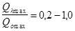
при остальных соотношениях - одноступенчатую параллельную.
11.8. Расчетная температура воды в подающих трубопроводах после ЦТП при присоединении систем отопления зданий по зависимой схеме должна приниматься равной расчетной температуре воды в подающем трубопроводе тепловых сетей до ЦТП, а при независимой схеме - не более чем на 20 °С ниже принятой в системах до водоподогревателя, но не выше 150 °C.
Самостоятельные трубопроводы от цтп для присоединения систем вентиляции при независимой схеме присоединения систем отопления допускаются только при максимальном тепловом потоке на вентиляцию более 50 % максимального теплового потока на отопление.
11.9. При расчете поверхности нагрева водо-водяных водоподогревателей для систем горячего водоснабжения и отопления температуру воды в подающем трубопроводе тепловой сети следует принимать равной температуре в точке излома графика температур воды или минимальной температуре воды, если отсутствует излом графика температур, а для систем отопления - также температуру воды, соответствующую расчетной температуре наружного воздуха для проектирования отопления. В качестве расчетной следует принимать большую из полученных величин поверхности нагрева.
11.10. При расчете поверхности нагрева водоподогревателей горячего водоснабжения температуру нагреваемой воды на выходе из водоподогревателя в систему горячего водоснабжения следует принимать равной 60 °С.
11.11. Для скоростных секционных водо-водяных водоподогревателей следует принимать противоточную схему потоков теплоносителей, при этом греющая вода из тепловой сети должна поступать:
в водоподогреватели систем отопления - в трубки;
то же, горячего водоснабжения - в межтрубное пространство.
В пароводяные водоподогреватели пар должен поступать в межтрубное пространство.
Для систем горячего водоснабжения при паровых тепловых сетях допускается применять емкие водоподогреватели, используя их в качестве баков-аккумуляторов горячей воды при условии соответствия их емкости, требуемой при расчете для баков-аккумуляторов.
Кроме скоростных водоподогревателей допускается применять водоподогреватели других типов, имеющие технические и эксплуатационные характеристики не ниже, чем у скоростных, в том числе пластинчатые.
11.12*. Число водо-водяных водоподогревателей следует принимать:
два параллельно включенных, каждый из которых должен рассчитываться на 100 % теплового потока - для систем отопления зданий не допускающих перерывов в подаче теплоты;
два, рассчитанных на 75 % теплового потока каждый, - для систем отопления зданий, сооружаемых в Северной строительно-климатической зоне;
один - для остальных систем отопления;
два параллельно включенных в каждой ступени подогрева, рассчитанных на 50 % теплового потока каждый, - для систем горячего водоснабжения.
При максимальном тепловом потоке на горячее водоснабжение до 2 МВт допускается предусматривать в каждой системе подогрева один водоподогреватель горячего водоснабжения, кроме зданий, не допускающих перерывов в подаче теплоты на горячее водоснабжение.
Для промышленных и сельскохозяйственных предприятий установка двух параллельно включенных водоподогревателей горячего водоснабжения в каждой ступени для хозяйственно-бытовых нужд может предусматриваться только для производств, не допускающих перерывов в подаче горячей воды.
При установке в системах отопления, вентиляции или горячего водоснабжения пароводяных водоподогревателей число их должно приниматься не менее двух, включаемых параллельно; резервные водоподогреватели предусматривать не следует.
Для технологических установок, не допускающих перерывов в подаче теплоты, должны предусматриваться резервные водоподогреватели, рассчитанные на тепловой поток в соответствии с режимом работы технологических установок предприятия.
11.13. На трубопроводах следует предусматривать устройство штуцеров с запорной арматурой: условным проходом 15 мм для выпуска воздуха в высших точках всех трубопроводов и условным проходом не менее 25 мм - для спуска воды в низших точках трубопроводов воды и конденсата.
11.14. Грязевики в тепловых пунктах следует предусматривать:
на подающем трубопроводе при вводе в тепловой пункт;
на обратном трубопроводе перед регулирующими устройствами и приборами учета расходов воды и тепловых потоков - не более одного.
В ИТп грязевики предусматриваются независимо от наличия их в ЦТП.
11.15. В тепловых пунктах не допускается устройство пусковых перемычек между подающим и обратным трубопроводами тепловых сетей и обводных трубопроводов для насосов (кроме подкачивающих), элеваторов, регулирующих клапанов, грязевиков и приборов для учета тепловых потоков и расхода воды.
Регуляторы перелива и конденсатоотводчики должны иметь обводные трубопроводы.
11.16. Для защиты от коррозии и накипеобразования трубопроводов и оборудования централизованных систем горячего водоснабжения, присоединяемых к тепловым сетям через водоподогреватели, следует предусматривать обработку воды в соответствии с рекомендуемым приложением 21, осуществляемую, как правило, в ЦТП. В ИТП допускается применение только магнитной и силикатной обработки.
11.17. Обработка воды не должна ухудшать ее качество, указанное в ГОСТ 2874-82.
Реагенты и материалы, применяемые для обработки воды, имеющие непосредственный контакт с водой, поступающей в систему горячего водоснабжения, должны быть разрешены Госкомсанэпиднадзором России для использования в практике хозяйственно-питьевого водоснабжения.
11.18. При установке банков-аккумуляторов для систем горячего водоснабжения в тепловых пунктах с вакуумной деаэрацией необходимо предусматривать защиту внутренней поверхности баков от коррозии и воды в них от аэрации путем применения герметизирующих жидкостей; при отсутствии вакуумной деаэрации внутренняя поверхность баков должна быть защищена от коррозии за счет применения защитных покрытий или катодной защиты.
В конструкции бака следует предусматривать устройство, исключающее попадание герметизирующей жидкости в систему горячего водоснабжения.
11.19. Для тепловых пунктов следует предусматривать приточно-вытяжную вентиляцию, рассчитанную на воздухообмен, определяемый по тепловыделениям от трубопроводов и оборудования. Расчетную температуру воздуха в рабочей зоне в холодный период года следует принимать не выше 28 °С, в теплый период года - на 5 °С выше температуры наружного воздуха по параметрам А.
При размещении тепловых пунктов в жилых и общественных зданиях следует производить проверочный расчет теплопоступлений из теплового пункта в смежные с ним помещения. В случае превышения в этих помещениях допускаемой температуры воздуха, установленной СНиП 2.04.05-91*, следует предусматривать мероприятия по дополнительной теплоизоляции ограждающих конструкций смежных помещений.
11.20. В полу теплового пункта следует устанавливать трап, а при невозможности самотечного отвода воды - устраивать водосборный приямок размером не менее 0,5´0,5´0,8 м. Приямок должен быть перекрыт съемной решеткой.
Для откачки воды из водосборного приямка в систему канализации, водостока или попутного дренажа следует предусматривать один дренажный насос. Насос, предназначенный для откачки воды из водосборного приямка, не допускается использовать для промывки систем потребления теплоты.
11.21. В тепловых пунктах следует предусматривать мероприятия по предотвращению превышения уровней шума, допускаемых для помещений жилых и общественных зданий.
Тепловые пункты, оборудуемые насосами (кроме бесшумных), не допускается размещать смежно, под или над помещениями жилых квартир, спальных и игровых детских дошкольных учреждений, спальными помещениями школ-интернатов, гостиниц, общежитий, санаториев, домов отдыха, пансионатов, палатами и операционными больниц, помещений с длительным пребыванием больных, кабинетами врачей, зрительными залами зрелищных предприятий.
11.22. Минимальные расстояния в свету от отдельно стоящих наземных ЦТП до наружных стен перечисленных помещений должны быть не менее 25 м.
11.23. Тепловые пункты по размещению на генеральном плане подразделяются на отдельно стоящие, пристроенные к зданиям и сооружениям и встроенные в здания и сооружения.
11.24. Встроенные в здания тепловые пункты, как правило, следует размещать в отдельных помещениях у наружных стен зданий.
11.25. Из теплового пункта должны предусматриваться выходы:
при длине помещения теплового пункта 12 м и менее и расположении его на расстоянии менее 12 м от выхода из здания наружу - один выход в соседнее помещение, коридор или лестничную клетку, а при расположении теплового пункта на расстоянии более 12 м от выхода из зданий - один самостоятельный выход наружу;
при длине помещения теплового пункта более 12 м - два выхода, один из которых должен быть непосредственно наружу, второй - в соседнее помещение, лестничную клетку или коридор.
Помещения тепловых пунктов потребителей пара должны иметь не менее двух выходов независимо от габаритов помещения.
11.26. Проемы для естественного освещения тепловых пунктов предусматривать не требуется.
Двери и ворота должны открываться из помещения или здания теплового пункта от себя.
11.27. По взрывопожарной и пожарной опасности помещения тепловых пунктов следует относить:
к категории Д - при теплоносителе воде и паре с температурой менее 300 °С;
к категории Г - при теплоносителе паре с температурой 300 °С и более.
11.28. При размещении тепловых пунктов в производственных и складских зданиях их следует отделять от других помещений согласно требованиям СНиП 2.09.02-85*.
Тепловые пункты, размещаемые в помещениях категории Г и Д производственных и складских зданий, а также административно-бытовых зданиях промышленных предприятий, в жилых и общественных зданиях, должны отделяться от других помещений перегородками или ограждениями, предотвращающими доступ посторонних лиц в тепловой пункт.
11.29. Для монтажа оборудования, габариты которого превышают размеры дверей, в наземных тепловых пунктах следует предусматривать монтажные проемы или ворота в стенах.
При этом размеры монтажного проема и ворот должны быть на 0,2 м более габаритных размеров наибольшего оборудования или блока трубопроводов.
11.30. Для перемещения оборудования и арматуры или неразъемных частей блоков оборудования следует предусматривать инвентарные подъемно-транспортные устройства.
При невозможности применения инвентарных устройств допускается предусматривать стационарные подъемно-транспортные устройства:
при массе перемещаемого груза от 0,1 до 1,0 т - монорельсы с ручными талями и кошками или краны подвесные ручные однобалочные;
то же, более 1,0 до 2,0 т - краны подвесные ручные однобалочные;
то же, более 2,0 т - краны подвесные электрические однобалочные.
Допускается предусматривать возможность использования подвижных подъемно-транспортных средств.
11.31. Для обслуживания оборудования и арматуры, расположенных на высоте от 1,5 до 2,5 м от пола, должны предусматриваться передвижные площадки или переносные устройства (стремянки).
В случае невозможности создания проходов для передвижных площадок, а также обслуживания оборудования и арматуры, расположенных на высоте 2,5 м и более, необходимо предусматривать стационарные площадки с ограждением и постоянными лестницами. Размеры площадок, лестниц и ограждений следует принимать в соответствии с требованиями пп. 9.24 и 9.25 настоящих норм и ГОСТ 23120-78.
Расстояние от уровня стационарной площадки до верхнего перекрытия должно быть не менее 2 м.
Пункт 11.32 исключить.
11.33. В ЦТП с постоянным обслуживающим персоналом следует предусматривать санузел с умывальником и шкаф для хранения одежды.
12.1. Электроснабжение электроприемников тепловых сетей следует выполнять согласно Правилам устройства электроустановок (ПУЭ) Минэнерго СССР.
Электроприемники тепловых сетей по надежности электроснабжения следует предусматривать:
I категории - подкачивающие и смесительные насосы в насосных, дренажные насосы дюкеров, диспетчерские пункты;
II категории - запорная арматура при телеуправлении, подкачивающие смесительные и циркуляционные насосы систем отопления и вентиляции в тепловых пунктах, насосы для зарядки и разрядки баков-аккумуляторов для подпитки тепловых сетей в открытых системах теплоснабжения, подпиточные насосы в узлах рассечки;
III категории - остальные электроприемники.
12.2. Аппаратура управления электроустановками в подземных камерах должна размещаться вне камер.
12.3. Электроосвещение следует предусматривать: в насосных, в тепловых пунктах, павильонах, в тоннелях и дюкерах, камерах, оснащенных электрооборудованием, а также на площадках эстакад и отдельно стоящих высоких опор в местах установки арматуры с электроприводом, регуляторов, контрольно-измерительных приборов. Освещенность должна приниматься по действующим нормам.
12.4. В тепловых сетях следует предусматривать:
автоматические регуляторы и блокировки, обеспечивающие:
заданное давление воды в подающем или обратном трубопроводах водяных тепловых сетей с поддержанием в подающем трубопроводе постоянного давления «после себя» и в обратном - «до себя» (регулятор подпора);
деление (рассечку) водяной сети на гидравлически независимые зоны при повышении давления воды сверх допустимого;
включение подпиточных устройств в узлах рассечки для поддержания статического давления воды в отключенной зоне на заданном уровне;
отборные устройства с необходимой запорной арматурой для измерения;
температуры воды в подающих (выборочно) и обратных трубопроводах перед секционирующими задвижками и, как правило, в обратном трубопроводе ответвлений Dу ³ 300 мм перед задвижкой по ходу воды;
давления воды в подающих и обратных трубопроводах до и после секционирующих задвижек и регулирующих устройств, и, как правило, в подающих и обратных трубопроводах ответвлений Dу ³ 300 мм перед задвижкой;
расхода воды в подающих и обратных трубопроводах ответвлений Dу ³ 400 мм;
давления пара в трубопроводах ответвлений перед задвижкой.
12.5. В камерах следует предусматривать местные показывающие контрольно-измерительные приборы для измерения температуры и давления в трубопроводах.
12.6. Автоматизация подкачивающих насосных на подающих и обратных трубопроводах водяных тепловых сетей должна обеспечивать:
постоянное заданное давление в подающем или обратном трубопроводах насосной при любых режимах работы сети;
включение резервного насоса, установленного на обратном трубопроводе, при повышении давления сверх допустимого во всасывающем трубопроводе насосной или установленного на подающем трубопроводе - при снижении давления в напорном трубопроводе насосной;
автоматическое включение резервного насоса (АВР) при отключении работающего или падении давления в напорном патрубке.
12.7. Дренажные насосы должны обеспечивать автоматическую откачку дренажей.
12.8. Автоматизация смесительных насосных должна обеспечивать постоянство заданной температуры смешения и защиту тепловых сетей после смесительных насосов от повышения температуры воды против заданной при остановке насосов.
12.9. Насосные должны быть оснащены комплектом показывающих и регистрирующих приборов (включая измерение расходов воды), устанавливаемых по месту или на щите управления, сигнализацией состояния и неисправности оборудования на щите управления.
12.10. Баки-аккумуляторы (включая насосы для зарядки и разрядки баков) горячего водоснабжения должны быть оборудованы:
а) контрольно-измерительными приборами для измерения:
уровня - регистрирующий прибор;
давления на всех подводящих и отводящих трубопроводах - показывающий прибор;
температуры воды в баке- показывающий прибор;
б) блокировками, обеспечивающими:
полное прекращение подачи воды в бак при достижении верхнего предельного уровня заполнения бака;
прекращение разбора воды при достижении нижнего уровня (отключение разрядных насосов);
в) сигнализацией:
верхнего предельного уровня (начало перелива в переливную трубу);
отключения насосов разрядки.
12.11. При установке баков-аккумуляторов на объектах с постоянным обслуживающим персоналом светозвуковая сигнализация выводится в помещение дежурного персонала.
На объектах, работающих без постоянного обслуживающего персонала, сигнал неисправности выносится на диспетчерский пункт. По месту фиксируется причина вызова обслуживающего персонала.
12.12*. Тепловые пункты следует оснащать средствами автоматизации, приборами теплотехнического контроля, учета и регулирования, которые устанавливаются по месту или на щите управления.
12.13. Средства автоматизации и контроля должны обеспечивать работу тепловых пунктов без постоянного обслуживающего персонала (с пребыванием персонала не более 50 % рабочего времени).
12.14. Автоматизация тепловых пунктов должна обеспечивать:
регулирование расхода теплоты в системе отопления и ограничение максимального расхода сетевой воды у потребителя;
заданную температуру воды в системе горячего водоснабжения;
поддержание статического давления в системах потребления теплоты при их независимом присоединении;
заданное давление в обратном трубопроводе или требуемый перепад давлений воды в подающем и обратном трубопроводах тепловых сетей;
защиту систем потребления теплоты от повышенного давления или температуры воды в случае возникновения опасности превышения допустимых предельных параметров;
включение резервного насоса при отключении рабочего;
прекращение подачи воды в бак-аккумулятор при достижении верхнего уровня воды в баке и разбора воды из бака при достижении нижнего уровня;
защиту системы отопления от опорожнения.
12.15. На предприятиях тепловых сетей, сооружения которых территориально разобщены, следует предусматривать диспетчерское управление.
12.16. Диспетчерское управление следует разрабатывать с учетом перспективного развития тепловых сетей всего города. В обоснованных случаях - для части города с учетом развития системы теплоснабжения.
12.17. Для тепловых сетей, как правило, предусматривается одноступенчатая структура диспетчерского управления с одним центральным диспетчерским пунктом. Для крупных систем теплоснабжения (города с населением свыше 1 млн. чел.) или особо сложных по структуре необходимо предусматривать двухступенчатую структуру диспетчерского управления с центральным и районными диспетчерскими пунктами.
Диспетчерское управление тепловыми сетями с тепловым потоком 100 МВт и менее определяется структурой управления городских коммунальных служб и, как правило, является частью объединенной диспетчерской службы города (OДC) или района.
12.18. Вновь строящиеся диспетчерские пункты предприятий тепловых сетей следует, как правило, располагать в помещении ремонтно-эксплуатационной базы.
12.19. Для тепловых сетей городов с населением свыше 1 млн. чел. допускается предусматривать АСУ ТП при технико-экономическом обосновании.
12.20. Применение технических средств телемеханизации определяется задачами диспетчерского управления и разрабатывается в комплексе с применением технических средств контроля, сигнализации, управления и автоматизации.
12.21. Телемеханизация должна обеспечить работу насосных станций без постоянного обслуживающего персонала.
12.22. Для насосных и центральных тепловых пунктов должны предусматриваться следующие устройства телемеханики:
телесигнализация о неисправностях оборудования или о нарушении заданного значения контролируемых параметров (обобщенный сигнал);
телеуправление пуском, остановкой насосов и арматурой с электроприводом, имеющее оперативное значение;
телесигнализация положения арматуры с электроприводами, насосов и коммутационной аппаратуры, обеспечивающей подвод напряжения в насосную;
телеизмерение давления, температуры, расхода теплоносителя; в электродвигателях - тока статора;
арматура на байпасах задвижек, подлежащих телеуправлению, должна приниматься с электроприводом; в схемах управления должна быть обеспечена блокировка электродвигателей основной задвижки и ее байпаса.
В узлах регулирования тепловых сетей при необходимости следует предусматривать:
телеизмерение давления теплоносителя в подающем и обратном трубопроводах, температуры в обратных трубопроводах ответвлений;
телеуправление запорной арматурой и регулирующими клапанами, имеющими оперативное значение.
12.23. На выводах тепловых сетей от источников теплоты следует предусматривать:
телеизмерение давления, температуры и расхода теплоносителя в подающем и обратном трубопроводах сетевой воды, а также трубопроводах пара и конденсата, расхода подпиточной воды;
аварийно-предупредительную телесигнализацию предельных значений расхода подпиточной воды, перепада давлений между подающей и обратной магистралями.
12.24. Аппаратура телемеханики, датчики телеинформации должны располагаться специальных помещениях, совмещенных с помещениями электротехнических устройств, исключающих воздействие на эту аппаратуру воды и пара при возникновении аварийных ситуаций.
12.25. Выбор датчиков следует производить из расчета одновременной передачи сигнализации на диспетчерский пункт и на щит управления контролируемого объекта.
12.26. На диспетчерских пунктах предусматривается устройство оперативной (диспетчерской) телефонной связи.
Оперативная связь с персоналом на тепловых сетях осуществляется, как правило, по прямым каналам связи с прокладкой телефонных кабелей; при этом могут быть использованы каналы связи энергосистем, городских телефонных сетей.
Следует предусматривать максимальное совмещение каналов связи и телемеханики в общем кабеле.
Для связи между персоналом, находящимся на линии, и эксплуатационным персоналом базы на автомашине эксплуатационного обслуживания теплосетей должна предусматриваться радиотелефонная станция.
Допускается установка автоматической телефонной станции для базы эксплуатации тепловых сетей.
13.1. При проектировании тепловых сетей и сооружений на них в районах с сейсмичностью 8 и 9 баллов, на подрабатываемых территориях, в районах с просадочными грунтами II типа, засоленными, набухающими, заторфованными и вечномерзлыми наряду с требованиями настоящих норм и правил следует соблюдать также требования СНиП II-7-81*, СНиП 2.01.09-91, СНиП 2.02.01-83*, СНиП 2.02.04-88 и СНиП 2.02.03-85.
При проектировании емкостных сооружений на просадочных грунтах II типа следует соблюдать также требования СНиП 2.04.02-84.
Примечание: При просадочных грунтах I типа тепловые сети должны проектироваться без учета требований данного раздела.
13.2. Запорную, регулирующую и предохранительную арматуру независимо от диаметров труб и параметров теплоносителя следует принимать стальной.
13.3. Расстояние между секционирующими задвижками следует принимать не более 1000 м. При обосновании допускается увеличивать расстояние на транзитных трубопроводах до 3000 м.
13.4. Прокладка тепловых сетей из неметаллических труб не допускается.
13.5. Совместная прокладка тепловых сетей с газопроводами в каналах и тоннелях независимо от давления газа не допускается.
Допускается предусматривать совместную прокладку с газопроводами природного газа только во внутриквартальных тоннелях и общих траншеях при давлении газа не более 0,005 МПа.
13.6. Расчетная сейсмичность для зданий и сооружений тепловых сетей должна приниматься равной сейсмичности района строительства.
13.7. Бесканальную прокладку тепловых сетей допускается предусматривать для трубопроводов Dу £ 400 мм.
13.8. Прокладка транзитных тепловых сетей под жилыми, общественными и производственными зданиями, а также по стенам зданий, фермам, колоннам и т.п. не допускается.
13.9. В местах прохождения трубопроводов тепловых сетей через фундаменты и стены зданий должен предусматриваться зазор между поверхностью теплоизоляционной конструкции трубы и верхом проема не менее 0,2 м. Для заделки зазора следует применять эластичные водогазонепроницаемые материалы.
13.10. В местах присоединения трубопроводов к насосам, водоподогревателям и бакам должны предусматриваться мероприятия, обеспечивающие продольные и угловые перемещения трубопроводов.
13.11. Сальниковые стальные компенсаторы допускается принимать только при подземной прокладке тепловых сетей для труб Dу ³ 400 мм.
Расчетная компенсирующая способность сальниковых компенсаторов должна приниматься на 100 мм меньше предусмотренной в конструкции компенсатора.
13.12. Подвижные катковые и шариковые опоры труб принимать не допускается.
13.13. При надземной прокладке должны применяться эстакады или низкие отдельно стоящие опоры.
Прокладка на высоких отдельно стоящих опорах и использование труб тепловых сетей для связи между опорами не допускаются.
13.14. Выбор трассы тепловых сетей, а также размещение компенсаторов, камер, неподвижных опор, дренажных устройств трубопроводов следует производить на основе материалов инженерно-геокриологических изысканий на застраиваемой территории с учетом прогноза изменения мерзлотно-грунтовых условий и принятого принципа использования вечномерзлых грунтов как оснований проектируемых и эксплуатируемых зданий и сооружений.
13.15.* Для компенсации тепловых удлинений трубопроводов должны приниматься гибкие компенсаторы из труб и углы поворотов трубопроводов - самокомпенсация. Допускается предусматривать сильфонные компенсаторы и при обосновании - сальниковые для трубопроводов Dу ³ 400 мм.
Применение сварных фасонных изделий для трубопроводов из труб из ВЧШГ не допускается.
13.16*. Схемы тепловых сетей городов и других населенных пунктов должны предусматривать подачу теплоты не менее чем по двум взаиморезервируемым трубопроводам, независимо от способа прокладки, в соответствии с табл. 1, рассчитанным на подачу не менее 70 % суммарного теплового потока каждым трубопроводом и связанным между собой перемычками.
Расстояние между двумя резервируемыми трубопроводами должно быть не менее 50 м.
При необходимости резервирования участка тепловой сети с трубами из ВЧШГ резервные трубопроводы допускается предусматривать как из труб из ВЧШГ, так и из стальных труб.
13.17. При подземном и наземном способах прокладки тепловых сетей в просадочных (при оттаивании) многолетнемерзлых грунтах необходимо предусматривать следующие мероприятия по сохранению устойчивости конструкций тепловых сетей:
прокладку сетей в каналах или тоннелях с естественной или искусственной вентиляцией, обеспечивающей требуемый температурный режим грунта;
замену грунта в основании каналов и тоннелей на непросадочный;
устройство свайного основания;
обеспечение водонепроницаемости каналов, тоннелей и камер;
удаление случайных и аварийных вод из камер и тоннелей.
Выбор мероприятий по сохранению устойчивости тепловых сетей должен выполняться на основе расчетов зоны оттаивания мерзлого грунта около трубопроводов и общего прогноза изменения мерзлотно-грунтовых условий застраиваемой территории.
13.18. Надземная прокладка тепловых сетей должна предусматриваться на эстакадах, низких или высоких отдельно стоящих опорах, а также в наземных каналах, расположенных на поверхности земли.
13.19. При подземной прокладке тепловых сетей для ответвлений к отдельным зданиям, возводимым или возведенным на вечномерзлых грунтах с сохранением мерзлого состояния (принцип I по СНиП 2.02.04-88), необходимо на расстоянии 6 м от стены здания предусматривать надземную прокладку сетей. Допускается предусматривать подземную прокладку тепловых сетей совместно с другими инженерными сетями в вентилируемых каналах с выходом их на поверхность в пределах проветриваемого подполья зданий, при этом должны быть приняты меры по предотвращению протаивания грунтов под фундаментами зданий.
13.20. При подземной прокладке тепловых сетей, строящихся по принципу сохранения мерзлоты (принцип I), бесканальную прокладку принимать не допускается.
13.21. По трассе тепловых сетей должна быть предусмотрена планировка земли, обеспечивающая отвод горячей воды при авариях от основания строительных конструкций на расстояние, исключающее ее тепловое влияние на вечномерзлый грунт.
13.22. При прокладке тепловых сетей в каналах должна предусматриваться оклеечная гидроизоляция из битумных рулонных материалов наружных поверхностей строительных конструкций и закладных частей.
13.23. Спускные устройства водяных тепловых сетей должны приниматься исходя из условий спуска воды из одного трубопровода секционируемого участка в течение 1 ч.
Спуск воды должен предусматриваться из трубопроводов непосредственно в системы канализации с охлаждением воды до температуры, допускаемой конструкциями сетей канализации и исключающей вредное тепловое воздействие на вечномерзлые грунты в основании.
Спуск воды в каналы и камеры не допускается.
13.24. Для узлов трубопроводов при надземной прокладке тепловых сетей на низких отдельно стоящих опорах или в наземных каналах должны предусматриваться надземные камеры (павильоны).
13.25. Наименьший диаметр труб независимо от расхода и параметров теплоносителя должен приниматься 50 мм.
13.26. Минимальная высота скользящих опор для труб при подземной прокладке тепловых сетей должна приниматься не менее 150 мм.
13.27. Расстояние между подвижными опорами труб при прокладке тепловых сетей в наземных каналах должно приниматься с коэффициентом 0,7, к расстояниям полученным при расчете трубопроводов на прочность.
13.28. При прокладке тепловых сетей в каналах минимальные расстояния в свету между трубопроводами и строительными конструкциями, приведенные в рекомендуемом приложении 7, должны увеличиваться до перекрытия каналов - на 100 мм, до дна каналов - 50 мм.
13.29. Расстояния в свету по горизонтали от тепловых сетей при их подземной прокладке до фундаментов зданий и сооружений должны приниматься:
при строительстве зданий и сооружений на вечномерзлых грунтах по принципу I - не менее 2 м от зоны оттаивания грунта около канала, определяемой расчетом, но не менее величин, указанных в табл. 7;
при строительстве зданий и сооружений на вечномерзлых грунтах по принципу II (без сохранения вечной мерзлоты) - не менее величин, указанных в табл. 7.
Таблица 7
|
Среднегодовая температура вечномерзлого грунта, °С |
|||
|
от 0 до минус 2 |
от минус 2 до минус 4 |
ниже минус 4 |
|
|
Наименьшие расстояния в свету по горизонтали, м |
|||
|
Глинистый |
7 |
6 |
6 |
|
Песчаный |
8 |
7 |
6 |
|
Крупнообломочный |
10 |
8 |
8 |
13.30. Засыпную тепловую изоляцию при прокладке тепловых сетей в наземных каналах и совместную подвесную изоляцию для подающего и обратного трубопроводов допускается принимать при обосновании.
13.31. Здания тепловых пунктов и других сооружений на тепловых сетях следует проектировать надземными с вентилируемыми подпольями.
13.32. Прокладку трубопроводов в сооружениях на тепловых сетях следует предусматривать выше уровня пола. Устройство в полу каналов и приямков не допускается.
13.33. Для опорожнения оборудования и трубопроводов следует предусматривать систему дренажа и слива воды, исключающую воздействие теплоты на грунт.
13.34. Заглубление баков горячей воды и конденсатных баков ниже планировочных отметок земли при строительстве на вечномерзлых грунтах по принципу I не допускается.
13.35. При всех способах прокладки тепловых сетей для компенсации тепловых удлинении трубопроводов и дополнительных перемещений от воздействия деформаций земной поверхности должны приниматься гибкие компенсаторы из труб и углы поворотов.
Сальниковые компенсаторы допускается принимать только на территории, где на земной поверхности не ожидается образование уступов.
13.36. При определении размеров гибких компенсаторов, расчете участков трубопроводов на самокомпенсацию и подборе сальниковых компенсаторов, кроме расчетных тепловых удлинений, определяемых в соответствии с требованиями пп. 7.34 и 7.35, должны учитываться дополнительно перемещения от воздействия деформаций земной поверхности Dlx, мм, определяемые по формуле
Dlx = ± mx e L, (25)
где mx - коэффициент, принимаемый по табл. 8;
e - ожидаемая величина относительной горизонтальной деформации земной поверхности, принимаемая для каждого участка трассы в границах зон влияния деформаций от каждой выработки по горно-геологическим данным, мм/м;
L - расстояние между смежными компенсаторами при бесканальной прокладке тепловых сетей или между неподвижными опорами труб при остальных способах прокладки, м.
Таблица 8
|
30-50 |
51-70 |
71-100 |
101 и более |
|
|
Коэффициент mx |
0,7 |
0,6 |
0,5 |
0,4 |
Примечание: 1. При величине e £ 1 мм/м учитывать дополнительно удлинения Dlx не требуется.
2. При бесканальной прокладке тепловых сетей с изоляцией, допускается перемещение трубы внутри изоляции, учитывать дополнительные перемещения Dlx при определении размеров компенсаторов не требуется.
13.37. Деформационные швы должны предусматриваться в каналах, тоннелях и при бесканальной прокладке с изоляцией, допускающей перемещение труб внутри изоляции. Общая ширина швов для каналов и тоннелей определяется по СНиП 2.01.09-91, а при бесканальной прокладке - по формуле (25).
Примечание. Деформационные швы при бесканальной прокладке в изоляции с битумным вяжущим не предусматриваются.
13.38. Уклоны тепловых сетей при подземной прокладке и труб попутного дренажа следует принимать с учетом ожидаемых наклонов земной поверхности от влияния горных выработок.
13.39. При прокладке тепловых сетей в подвалах и подпольях зданий усилия от неподвижных опор не должны передаваться на конструкции зданий.
13.40. При проектировании тепловых сетей и сооружений на них должны соблюдаться также требования пп. 13.9 и 13.10.
13.41. При проектировании тепловых сетей необходимо предусматривать мероприятия, предотвращающие просадку строительных конструкций, вызывающую прогиб трубопроводов более допустимой расчетной величины.
13.42. При подземной прокладке тепловых сетей бесканальную прокладку применять не допускается.
13.43. Пересечение тепловыми сетями жилых, общественных и производственных зданий при подземной прокладке не допускается.
13.44*. При подземной прокладке тепловых сетей параллельно фундаментам зданий и сооружений в засоленных и набухающих грунтах наименьшие расстояния по горизонтали до фундаментов зданий и сооружений должны быть не менее 5 м; в грунтах II типа по просадочности принимаются по табл. 9.
Таблица 9
|
Условный проход труб, мм |
|||
|
до 100 |
от 100 до 300 |
более 300 |
|
|
Наименьшие расстояния по горизонтали в свету, м |
|||
|
До 5 |
|||
|
От 5 до 12 |
5 |
7,5 |
10 |
|
Cв. 12 |
7,5 |
10 |
15 |
При прокладке тепловых сетей на расстояниях, меньше указанных в табл. 9, должны предусматриваться водонепроницаемые конструкции каналов и камер, а также постоянное удаление из камер случайных и аварийных вод.
Наименьшее расстояние по горизонтали в свету от наружной стенки канала, тоннеля или оболочки бесканальной прокладки до водопровода Dу < 500 мм - 3 м, Dу ³ 500 мм - 4 м.
Наименьшее расстояние по горизонтали до бортового камня автомобильной дороги для трубопроводов диаметром более 100 мм должно приниматься не менее 2 м.
При возведении зданий и сооружений в грунтах II типа, просадочные свойства которых устранены уплотнением, закреплением или при устройстве под здания и сооружения свайных фундаментов, расстояния по горизонтали от наружной грани строительных конструкций тепловых сетей до фундаментов зданий и сооружений в свету принимать по табл. 3* приложения 6 как для просадочных грунтов I типа.
13.45. В основании камер должно предусматриваться уплотнение грунтов на глубину не менее 1 м.
В основании каналов при величине просадки более 40 см должно предусматриваться уплотнение грунтов на глубину 0,3 м, а при величине просадки более 40 см должна предусматриваться дополнительно укладка слоя суглинистого грунта, обработанного битумами или дегтярными материалами, толщиной не менее 10 см на всю ширину траншеи.
13.46. Емкостные сооружения должны располагаться, как правило, на участках с наличием дренирующего слоя и с минимальной величиной толщин просадочных, засоленных и набухающих грунтов. При расположении площадки строительства для емкостных сооружений на склоне следует предусматривать нагорную канаву для отведения дождевых и талых вод.
13.47*. Расстояние от емкостных сооружений до зданий и сооружений различного назначения должно быть:
при наличии засоленных и набухающих грунтов - не менее 1,5 толщины слоя засоленного или набухающего грунта;
в грунтах II типа по просадочности при водопроницаемых (дренажных) подстилающих грунтах - не менее 1,5 толщины просадочного слоя, а при недренирующих подстилающих грунтах - не менее трех толщин просадочного слоя, но не более 40 м.
Примечание. Величину слоя просадочного, засоленного, набухающего грунта надлежит принимать от поверхности естественного рельефа, а при наличии планировки срезкой или подсыпкой - соответственно от уровня срезки или подсыпки.
13.48. Под полами тепловых пунктов, насосных и т.п., а также емкостных сооружений следует предусматривать уплотнение грунта на глубину 2,0 - 2,5 м. Контур уплотненного грунта должен быть больше габаритов сооружения не менее чем на 3,0 м в каждую сторону.
Полы должны быть водонепроницаемые и иметь уклон не менее 0,01, в сторону водосборного водонепроницаемого приямка. В местах сопряжения полов со стенами должны предусматриваться водонепроницаемые плинтусы на высоту 0,1-0,2 м.
13.49. Для обеспечения контроля за состоянием и работой тепловых сетей при проектировании их на просадочных, засоленных и набухающих грунтах необходимо предусматривать возможность свободного доступа к их основным элементам и узлам.
13.50. Пропуск труб и каналов через стены сооружений необходимо осуществлять с помощью сальников, обеспечивающих их горизонтальное смещение внутри и за пределы сооружения на 1/5 возможной величины просадки, суффозионной осадки или набухания грунтов в основании.
13.51*. Вводы тепловых сетей в здания следует принимать герметичными.
В фундаментах (стенах подвалов) зазор между поверхностью теплоизоляционной конструкции трубы и перемычкой над проемом должен предусматриваться не менее 30 см и не менее расчетной величины просадки при возведении зданий с применением комплекса мероприятии. Зазор следует заделывать эластичными материалами.
Дно канала, примыкающего к зданию, должно быть выше подошвы фундамента на величину не менее 50 см.
13.52. При величине просадки основания здания более 20 см каналы на вводах в здания на расстоянии, указанном в табл. 9, должны приниматься водонепроницаемыми.
13.53. При проектировании тепловых сетей и сооружений на них следует также соблюдать требования п. 13.10.
13.54. Трассу тепловых сетей следует предусматривать на участках:
с наименьшей суммарной мощностью слоев торфа, илов и насыпных грунтов;
с уплотненным или осушенным торфом;
с прочными грунтами, подстилающими торфы.
13.55. При подземной подкладке тепловых сетей бесканальную прокладку принимать не допускается.
13.56. Для отдельно стоящих опор и опор эстакад следует принимать свайные основания.
13.57. Основания под каналы и камеры при подземной прокладке тепловых сетей следует принимать:
при мощности слоя торфа до 1 м - с полной выторфовкой с устройством песчаной подушки по всему дну траншеи и монолитной железобетонной плиты под основание каналов и камер;
при мощности слоя торфа более 1 м - на свайном основании с устройством сплошного железобетонного ростверка под каналы и в случае попутного дренажа - под дренажные трубы.
13.58. Пересечение тепловыми сетями жилых, общественных и производственных зданий при подземной прокладке не допускается.
Qomax - максимальный тепловой поток на отопление при t0, Вт;
Qom - средний тепловой поток на отопление при tom, Вт;
Qvmax - максимальный тепловой поток на вентиляцию при t0, Вт;
Qvm - средний тепловой поток на вентиляцию при tom, Вт;
Qhmax - максимальный тепловой поток на горячее водоснабжение в сутки наибольшего водопотребления за период со среднесуточной температурой наружного воздуха 8 °С и менее (отопительный период), Вт;
Qhm - средний тепловой поток на горячее водоснабжение в средние сутки за неделю в отопительный период, Вт;
Q - то же, за период со среднесуточной температурой наружного воздуха более 8 °С (неотопительный период), Вт;
c - удельная теплоемкость воды, принимаемая в расчетах равной 4,187 кДж/(кг×°С);
q0 - укрупненный показатель максимального теплового потока на отопление жилых зданий на 1 м2 общей площади, принимаемый по рекомендуемому приложению 2, Вт;
A - общая площадь жилых зданий, м2;
qh - укрупненный показатель среднего теплового потока на горячее водоснабжение на одного человека, принимаемый по рекомендуемому приложению 3, Вт;
t0 - расчетная температура наружного воздуха для проектирования отопления, °С;
ti - средняя температура внутреннего воздуха отапливаемых зданий, принимаемая для жилых и общественных зданий равной 18 °С, для производственных зданий - 16 °С;
tom - средняя температура наружного воздуха за период со среднесуточной температурой воздуха 8 °С и менее (отопительный период), °С;
tc - температура холодной (водопроводной) воды в отопительный период (при отсутствии данных принимается равной 5 °С);
t- температура холодной (водопроводной) воды в неотопительный период (при отсутствии данных принимается равной 15 °С);
t¢ - температура воды после первой ступени подогрева при двухступенчатых схемах присоединения водоподогревателей, °С;
th - температура воды, поступающей в систему горячего водоснабжения потребителей, °С;
t1 - температура воды в подающем трубопроводе тепловой сети при расчетной температуре наружного воздуха, °С;
t2 - то же, в обратном трубопроводе тепловой сети, °С;
t¢1 - температура воды в подающем трубопроводе тепловой сети в точке излома графика температуры воды, °С;
t¢2 - то же, в обратном трубопроводе тепловой сети после системы отопления зданий, °С;
t¢3 - температура воды после параллельно включенного водоподогревателя горячего водоснабжения в точке излома графика температур воды; рекомендуется принимать t¢3 = 30 °С;
Gomax - максимальный расход воды на отопление при t0, кг/ч;
Gvmax - максимальный расход воды на вентиляцию, кг/ч;
Ghm, Ghmax - средний и максимальный расходы воды на горячее водоснабжение, кг/ч;
Gd - суммарный расчетный расход сетевой воды в двухтрубных тепловых сетях открытых и закрытых систем теплоснабжения, кг/ч;
G - расчетный расход воды в двухтрубных водяных тепловых сетях в неотопительный период, кг/ч;
DP - потери давления в трубопроводах на трение и в местных сопротивлениях, Па;
R - удельная потеря давления на трение, Па/м;
l¢ - приведенная длина трубопровода, м;
l - длина участка трубопровода по плану, м;
le - эквивалентная длина местных сопротивлений, м;
Sx - сумма коэффициентов местных сопротивлений на рассчитываемом участке;
ke - эквивалентная шероховатость внутренней поверхности стальных труб, м;
r - средняя плотность теплоносителя на рассчитываемом участке, кг/м3;
l - коэффициент гидравлического трения;
Re - число Рейнольдса;
Re¢ - предельное число Рейнольдса, характеризующее границы переходной области и области квадратичного закона;
а - норма расхода воды на горячее водоснабжение при температуре 55 °С на одного человека в сутки, проживающего в здании с горячим водоснабжением, принимаемая в зависимости от степени комфортности зданий в соответствии со СНиП 2.04.01-85, л;
b - норма расхода воды на горячее водоснабжение, потребляемой в общественных зданиях, при температуре 55 °С, принимаемая в размере 25 л/сут на 1 чел.;
m - число человек;
b - коэффициент, учитывающий изменение среднего расхода воды на горячее водоснабжение в неотопительный период по отношению к отопительному периоду, принимаемый при отсутствии данных для жилищно-коммунального сектора равным 0,8 (для курортов b = 1,2 -1,5), для предприятий - 1,0;
Ру - давление условное, избыточное, Па;
Рр - давление рабочее, избыточное, Па.
|
Этажность жилой постройки |
Характеристика зданий |
Расчетная температура наружного воздуха для проектирования отопления t0, °С |
||||||||||
|
минус 5 |
минус 10 |
минус 15 |
минус 20 |
минус 25 |
минус 30 |
минус 35 |
минус 40 |
минус 45 |
минус 50 |
минус 55 |
||
|
Для постройки до 1985 г. |
||||||||||||
|
1 - 2 |
Без учета и внедрения энергосберегающих мероприятий |
148 |
154 |
160 |
205 |
213 |
230 |
234 |
237 |
242 |
255 |
271 |
|
3 - 4 |
95 |
102 |
109 |
117 |
126 |
134 |
144 |
150 |
160 |
169 |
179 |
|
|
5 и более |
65 |
70 |
77 |
79 |
86 |
88 |
98 |
102 |
109 |
115 |
122 |
|
|
1 - 2 |
С учетом внедрения энергосберегающих мероприятий |
147 |
153 |
160 |
194 |
201 |
218 |
222 |
225 |
230 |
242 |
257 |
|
3 - 4 |
90 |
97 |
103 |
111 |
119 |
128 |
137 |
140 |
152 |
160 |
171 |
|
|
5 и более |
65 |
69 |
73 |
75 |
82 |
88 |
92 |
96 |
103 |
109 |
116 |
|
|
Для постройки после 1985 г. |
||||||||||||
|
1 - 2 |
По новым типовым проектам |
145 |
152 |
159 |
166 |
173 |
177 |
180 |
187 |
194 |
200 |
208 |
|
3 - 4 |
74 |
80 |
86 |
91 |
97 |
101 |
103 |
109 |
116 |
123 |
130 |
|
|
5 и более |
65 |
67 |
70 |
73 |
81 |
87 |
87 |
95 |
100 |
102 |
108 |
|
|
Примечания: 1. Энергосберегающие мероприятия обеспечиваются проведением работ по утеплению зданий при капитальных и текущих ремонтах, направленных на снижение тепловых потерь. 2. Укрупненные показатели зданий по новым типовым проектам приведены с учетом внедрения прогрессивных архитектурно-планировочных решений и применения строительных конструкций с улучшенными теплофизическими свойствами, обеспечивающими снижение тепловых потерь. |
||||||||||||
|
Средняя за отопительный период норма расхода воды при температуре 55 °С на горячее водоснабжение в сутки на 1 чел., проживающего в здании с горячим водоснабжением, л |
На одного человека, Вт, проживающего в здании |
||
|
с горячим водоснабжением |
с горячим водоснабжением с учетом потребления в общественных зданиях |
без горячего водоснабжения с учетом потребления в общественных зданиях |
|
|
85 |
247 |
320 |
73 |
|
90 |
259 |
332 |
73 |
|
105 |
305 |
376 |
73 |
|
115 |
334 |
407 |
73 |
|
Определяемые величины |
Единица измерения |
Формула |
|
Суммарные потери давления в трубопроводах на трение и в местных сопротивлениях |
Па |
DР = RC |
|
Удельные потери давления на трение |
Па/м |
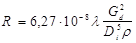 |
|
Внутренний диаметр труб |
м |
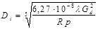 |
|
Приведенная длина трубопровода |
* |
l¢ = l + le |
|
Эквивалентная длина местных сопротивлений |
* |
le = 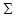 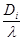 |
|
Коэффициент гидравлического трения: |
||
|
для области квадратичного закона (при Re ³ Re¢) |
- |
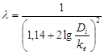 |
|
для любых значении числа Рейнольдса (приближенно) |
- |
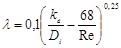 |
|
Предельное число Рейнольдса, характеризующее границы областей: переходной и квадратичного закона |
- |
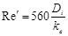 |
|
* При отсутствии данных о характере и количестве местных сопротивлений на трубопроводах тепловых сетей суммарную эквивалентную длину местных сопротивлений на участке трубопроводов допускается определять умножением длины трубопровода на поправочный коэффициент а1, принимаемый по рекомендуемому приложению 5*. |
||
|
Типы компенсаторов |
Условный проход трубопровода, мм |
Значения коэффициента а1 |
|
|
для паровых сетей |
для водяных и конденсатных сетей |
||
|
Транзитные тепловые сети (без ответвлений) |
|||
|
Сальниковые |
До 1400 |
0,2 |
0,2 |
|
П-образные с гнутыми отводами |
До 300 |
0,3 |
0,3 |
|
П-образные со сварными или крутоизогнутыми отводами |
200-350 |
0,7 |
0,5 |
|
То же |
400-500 |
0,9 |
0,7 |
|
- |
600-1400 |
1,2 |
1,0 |
|
Прочие тепловые сети |
|||
|
Сальниковые |
До 400 |
0,4 |
0,3 |
|
То же |
450-1400 |
0,5 |
0,4 |
|
П-образные с гнутыми отводами |
До 150 |
0,5 |
0,3 |
|
То же |
175-200 |
0,6 |
0,4 |
|
- |
250-300 |
0,8 |
0,6 |
|
П-образные со сварными или крутоизогнутыми отводами |
175-250 |
0,8 |
0,6 |
|
То же |
300-350 |
1,0 |
0,8 |
|
- |
400-500 |
1,0 |
0,9 |
|
- |
600-1400 |
1,2 |
1,0 |
|
Примечание. Суммарная эквивалентная длина местных сопротивлений на участке трубопровода определяется по формуле le = lа1, где l - длина участка трубопровода по плану, м; а1 - коэффициент, учитывающий долю падения давления в местных сопротивлениях по отношению к падению давлений на трение. |
|||
Таблица 1*
Расстояния по вертикали
|
Сооружения и инженерные сети |
Наименьшие расстояния в свету по вертикали, м |
|
Подземная прокладка тепловых сетей |
|
|
До водопровода, водостока, газопровода, канализации |
0,2 |
|
До бронированных кабелей связи |
0,5 |
|
До силовых и контрольных кабелей напряжением до 35 кВ |
0,5 - при соблюдении требований прим. 5 |
|
До маслонаполненных кабелей напряжением св. 110 кВ |
1 - при соблюдении требований прим. 5 |
|
До блока телефонной канализации или до бронированного кабеля связи в трубах |
0,15 |
|
До подошвы рельсов железных дорог промышленных предприятий |
1,0 |
|
То же, железных дорог общей сети |
2,0 |
|
» » трамвайных путей |
1,0 |
|
До верха дорожного покрытия автомобильных дорог общей сети I, II и III категорий |
1,0 |
|
До дна кювета или других водоотводящих сооружений или до основания насыпи железнодорожного земляного полотна (при расположении тепловых сетей под этими сооружениями) |
0,5 |
|
До сооружений метрополитена (при расположении тепловых сетей над этими сооружениями) |
1,0 |
|
Надземная прокладка тепловых сетей |
|
|
До головки рельсов железных дорог |
Габариты «С», «Сп», «Су» по ГОСТ 9238-83 и ГОСТ 9720-76 |
|
До верха проезжей части автомобильной дороги |
5,0 |
|
До верха пешеходных дорог |
2,2 |
|
До частей контактной сети трамвая |
0,3 |
|
То же, троллейбуса |
0,2 |
|
Для воздушных линий электропередачи при наибольшей стреле провеса проводов при напряжении, кВ: |
|
|
до 1 |
1,0 |
|
св. 1 до 20 |
3,0 |
|
35 - 110 |
4,0 |
|
150 |
4,5 |
|
220 |
5,0 |
|
330 |
6,0 |
|
500 |
6,5 |
|
Примечания: 1* Заглубление тепловых сетей от поверхности земли или дорожного покрытия (кроме автомобильных дорог I, II и III категорий) следует принимать не менее: а) до верха перекрытий каналов и тоннелей - 0,5 м; б) до верха перекрытий камер - 0,3 м; в) до верха оболочки бесканальной прокладки - 0,7 м. В непроезжей части допускаются выступающие над поверхностью земли перекрытия камер и вентиляционных шахт для тоннелей и каналов на высоту не менее 0,4 м; г) на вводе тепловых сетей в здание допускается принимать заглубления от поверхности земли до верха перекрытия каналов или тоннелей - 0,3 м и до верха оболочки бесканальной прокладки - 0,5 м; д) при высоком уровне грунтовых вод допускается предусматривать уменьшение величины заглубления каналов и тоннелей и расположение перекрытий выше поверхности земли на высоту не менее 0,4 м, если при этом не нарушаются условия передвижения транспорта. 2. При надземной прокладке тепловых сетей на низких опорах расстояние в свету от поверхности земли до низа тепловой изоляции трубопроводов должно быть, м, не менее: при ширине группы труб до 1,5 м - 0,35; » » » » более 1,5 м - 0,5. 3. При подземной прокладке тепловые сети при пересечении с силовыми и контрольными кабелями связи могут располагаться над или под ними. 4. При бесканальной прокладке расстояние в свету от водяных тепловых сетей открытой системы теплоснабжения или сетей горячего водоснабжения до расположенных ниже или выше тепловых сетей канализационных труб принимается не менее 0,4 м. 5. Температура почвы в местах пересечения тепловых сетей с электрокабелями на глубине заложения силовых и контрольных кабелей напряжением до 35 кВ не должна повышаться более чем на 10 °С по отношению к высшей среднемесячной летней температуре почвы и на 15 °С - к низшей среднемесячной зимней температуре почвы на расстоянии до 2 м от крайних кабелей, a температура почвы на глубине заложения маслонаполненного кабеля не должна повышаться более чем на 5 °С по отношению к среднемесячной температуре в любое время года на расстоянии до 3 м от крайних кабелей. 6. Заглубление тепловых сетей в местах подземного пересечения железных дорог общей сети в пучинистых грунтах определяется расчетом из условий, при которых исключается влияние тепловыделений на равномерность морозного пучения грунта. При невозможности обеспечить заданный температурный режим за счет заглубления тепловых сетей предусматривается вентиляция тоннелей (каналов, футляров), замена пучинистого грунта на участке пересечения или надземная прокладка тепловых сетей. 7. Расстояния до блока телефонной канализации или до бронированного кабеля связи в трубах следует уточнять по специальным нормам Министерства связи. |
|
Наименьшие расстояния по горизонтали в свету от подземных водяных тепловых сетей открытых систем теплоснабжения и сетей горячего водоснабжении до источников возможного загрязнения приведены в таблице 2*.
Таблица 2*
Расстояния по горизонтали
|
Наименьшие расстояния в свету, по горизонтали, м |
|
|
1. Сооружения и трубопроводы бытовой и производственной канализации: |
|
|
при прокладке тепловых сетей в каналах и тоннелях |
1,0 |
|
при бесканальной прокладке тепловых сетей Ду £ 200 мм |
1,5 |
|
то же, Ду > 200 мм |
3,0 |
|
2. Кладбища, свалки, скотомогильники, поля орошения: |
|
|
при отсутствии грунтовых вод |
10,0 |
|
при наличии грунтовых вод и в фильтрующих грунтах с движением грунтовых вод в сторону тепловых сетей |
50,0 |
|
3. Выгребные и помойные ямы: |
|
|
при отсутствии грунтовых вод |
7,0 |
|
при наличии грунтовых вод и в фильтрующих грунтах с движением грунтовых вод в сторону тепловых сетей |
20,0 |
|
Примечание. При расположении тепловых сетей при параллельной прокладке расстояния по горизонтали должны приниматься не менее разности в отметках заложения сетей, выше тепловых сетей - расстояния, указанные в таблице, должны увеличиваться на разницу в глубине заложения. |
|
Расстояния по горизонтали от строительных конструкций тепловых сетей (оболочки изоляции трубопроводов при бесканальной прокладке) до сооружений и инженерных сетей принимаются по табл. 3*.
Таблица 3*
Расстояния по горизонтали
|
Наименьшие расстояния в свету, м |
|
|
Подземная прокладка тепловых сетей |
|
|
До фундаментов зданий и сооружений: |
|
|
а) при прокладке в каналах и тоннелях и непросадочных грунтах (от наружной бетонной стенки канала, тоннеля) при диаметре труб, мм: |
|
|
Ду < 500 |
2,0 |
|
Ду = 500 - 800 |
5,0 |
|
Ду = 900 и более |
8,0 |
|
То же, в просадочных грунтах I типа при: |
|
|
Ду < 500 |
5,0 |
|
Ду ³ 500 |
8,0 |
|
б) при бесканальной прокладке непросадочных грунтах (от оболочки бесканальной прокладки) при диаметре труб, мм: |
|
|
Ду < 500 |
5,0 |
|
Ду ³ 500 |
7,0 |
|
То же, в просадочных грунтах I типа при: |
|
|
Ду £ 100 |
5,0 |
|
Ду > 100 до Ду < 500 |
7,0 |
|
Ду ³ 500 |
8,0 |
|
До оси ближайшего пути железной дороги колеи 1520 мм |
4,0 (но не менее глубины траншеи тепловой сети до подошвы насыпи) |
|
То же, колеи 750 мм |
2,8 |
|
До ближайшего сооружения земляного полотна железной дороги |
3,0 (но не менее глубины траншеи тепловой сети до основания крайнего сооружения) |
|
До оси ближайшего пути электрифицированной железной дороги |
10,75 |
|
До оси ближайшего трамвайного пути |
2,8 |
|
До бортового камня улицы, дороги (кромки проезжей части, укрепленной полосы обочины) |
1,5 |
|
До наружной боровки кювета или подошвы насыпи дороги |
1,0 |
|
До фундаментов ограждений и опор трубопроводов |
1,5 |
|
До мачт и столбов наружного освещения и сети связи |
1,0 |
|
До фундаментов опор мостов, путепроводов |
2,0 |
|
До фундаментов опор контактной сети железных дорог |
3,0 |
|
То же, трамваев и троллейбусов |
1,0 |
|
До силовых и контрольных кабелей напряжением до 35 кВ и маслонаполненных кабелей (более 110 кВ) |
2,0 (см. прим. 1) |
|
До фундаментов опор воздушных линий электропередачи при напряжении, кВ (при сближении и пересечении) |
|
|
до 1 |
1,0 |
|
св. 1 до 35 |
2,0 |
|
» 35 |
3,0 |
|
До блока телефонной канализации, бронированного кабеля связи в трубах и до радиотрансляционных кабелей |
1,0 |
|
До водопроводов |
1,5 |
|
То же, в просадочных грунтах I типа |
2,5 |
|
До дренажей и дождевой канализации |
1,0 |
|
До производственной и бытовой канализации |
1,0 (при закрытой системе теплоснабжения) |
|
До газопроводов давлением до 0,6 МПа при прокладке тепловых сетей в каналах, тоннелях, а также при бесканальной прокладке с попутным дренажом |
2,0 |
|
То же, более 0,6 до 1,2 МПа |
4,0 |
|
До газопроводов давлением до 0,3 МПа при бесканальной прокладке с попутным дренажом |
1,0 |
|
То же, более 0,3 до 0,6 МПа |
1,5 |
|
То же, более 0,6 до 1,2 МПа |
2,0 |
|
До ствола деревьев |
2,0 |
|
До кустарников |
1,0 |
|
До каналов и тоннелей различного назначения (в том числе до бровки каналов сетей орошения - арыков) |
2,0 |
|
До сооружений метрополитена при обделке с наружной оклеечной изоляцией |
5,0 (но не менее глубины траншей тепловой сети до основания сооружения) |
|
То же, без оклеечной гидроизоляции |
8 (но не менее глубины траншей тепловой сети до основания сооружения) |
|
До ограждения наземных линий метрополитена |
5 |
|
Надземная прокладка тепловых сетей |
|
|
До ближайшего сооружения земляного полотна железных дорог |
3 |
|
До оси железнодорожного пути от промежуточных опор (при пересечении железных дорог) |
Габариты «С», «Сп», «Су» по ГОСТ 9238-83 и ГОСТ 9720-76 |
|
До оси ближайшего трамвайного пути |
2,8 |
|
До бортового камня или до наружной бровки кювета автомобильной дороги |
0,5 |
|
До воздушной линии электропередачи с наибольшим отклонением проводов при напряжении, кВ: |
(см. прим. 8) |
|
до 1 |
1 |
|
более 1 до 20 |
3 |
|
35 - 110 |
4 |
|
150 |
4,5 |
|
220 |
5 |
|
330 |
6 |
|
500 |
6,5 |
|
До ствола дерева |
2,0 |
|
До жилых и общественных зданий для водяных тепловых сетей, паропроводов давлением Ру £ 0,63 МПа, конденсатных тепловых сетей при диаметрах труб, мм: |
|
|
Ду = 500 - 1400 |
25 |
|
Ду от 200 до 500 |
20 |
|
Ду < 200 |
10 |
|
Для сетей горячего водоснабжения |
5 |
|
То же, для паровых тепловых сетей Ру от 1,0 до 2,5 МПа |
30 |
|
То же, св. 2,5 до 6,3 МПа |
40 |
|
Примечания: 1. Допускается уменьшение приведенного в табл. 3* расстояния при соблюдении условия, что на всем участке сближения тепловых сетей с кабелями температура почвы (принимается по климатическим данным) в месте прохождения кабелей в любое время года не будет повышаться по сравнения со среднемесячной температурой более чем на 10 °С для силовых контрольных кабелей напряжением 20 - 35 кВ и маслонаполненных кабелей более 110 кВ. 2. При прокладке в общих траншеях тепловых и других инженерных сетей (при их одновременном строительстве) допускается уменьшение расстояния от тепловых сетей до водопровода и до канализации до 0,8 м при расположении всех сетей в одном уровне или с разницей в отметках заложения не более 0,4 м. 3. Для тепловых сетей, прокладываемых ниже основания фундаментов опор, зданий, сооружений, должна дополнительно учитываться разница в отметках заложения с учетом естественного откоса грунта или приниматься меры к укреплению фундаментов. 4. При параллельной прокладке подземных тепловых и других инженерных сетей на разной глубине заложения приведенные в таблице 3* расстояния должны увеличиваться и приниматься не менее разности заложения сетей. В стесненных условиях прокладки и невозможности увеличения расстояния должны предусматриваться мероприятия по защите инженерных сетей от обрушения на время ремонта и строительства тепловых сетей. 5. При параллельной прокладке тепловых и других инженерных сетей допускается уменьшение приведенных в табл. 3* расстояний до сооружений на сетях (колодцев, камер, ниш и т.п.) до величины не менее 0,5 м, предусматривая мероприятия по обеспечению сохранности сооружений при производстве строительно-монтажных работ. При этом расстояние от наружных поверхностей стенок камер и ниш подземных тепловых сетей до газопроводов допускается принимать в свету меньше указанных в табл.3* с соблюдением требований СНиП 2.04.08-87. 6. Расстояния до специальных кабелей связи должны уточняться по соответствующим нормам. 7. Расстояния от наземных павильонов тепловых сетей для размещения запорной и регулирующей арматуры (при отсутствии в них насосов) до жилых зданий принимается не менее 15 м. 8. При параллельной прокладке надземных тепловых сетей с воздушной линией электропередачи напряжением свыше 1 до 500 кВ вне населенных пунктов расстояние по горизонтали от крайнего провода следует принимать не менее высоты опоры. |
|
1. Минимальные расстояния в свету при подземной и надземной прокладках тепловых сетей между строительными конструкциям и трубопроводами следует принимать по табл. 1 - 3.
Таблица 1
Непроходные каналы
|
Расстояние от поверхности теплоизоляционной конструкции трубопроводов в свету, мм, не менее |
||||
|
до стенки канала |
до поверхности теплоизоляционной конструкции смежного трубопровода |
до перекрытия канала |
до дна канала |
|
|
25 - 80 |
70 |
100 |
50 |
100 |
|
100-250 |
80 |
140 |
50 |
150 |
|
300 - 350 |
100 |
160 |
70 |
150 |
|
400 |
100 |
200 |
70 |
180 |
|
500-700 |
110 |
200 |
100 |
180 |
|
800 |
120 |
250 |
100 |
200 |
|
900-1400 |
120 |
250 |
100 |
300 |
|
Примечание: При реконструкции тепловых сетей с использованием существующих каналов допускается отступление от размеров, указанных в данной таблице. |
||||
Таблица 2
Тоннели, надземная прокладка и тепловые пункты
|
Условный проход трубопроводов, мм |
Расстояние от поверхности теплоизоляционной конструкции трубопроводов в свету, мм, не менее |
||||
|
до стенки тоннеля |
до перекрытия тоннеля |
до дна тоннеля |
до поверхности теплоизоляционной конструкции смежного трубопровода в тоннелях, при надземной прокладке и в тепловых пунктах |
||
|
по вертикали |
по горизонтали |
||||
|
25-80 |
150 |
100 |
150 |
100 |
100 |
|
100-250 |
170 |
100 |
200 |
140 |
140 |
|
300-350 |
200 |
120 |
200 |
160 |
160 |
|
400 |
200 |
120 |
200 |
160 |
200 |
|
500-700 |
200 |
120 |
200 |
200 |
200 |
|
800 |
250 |
150 |
250 |
200 |
250 |
|
900 |
250 |
150 |
300 |
200 |
250 |
|
1000-1400 |
350 |
250 |
350 |
300 |
300 |
|
Примечание: При реконструкции тепловых сетей с использованием существующих каналов допускается отступление от размеров, указанных в данной таблице. |
|||||
Таблица 3
Узлы трубопроводов в тоннелях, камерах и тепловых пунктах
|
Наименование |
Расстояние в свету, мм, не менее |
|
От пола или перекрытия до поверхности теплоизоляционных конструкций трубопроводов (для перехода) |
700 |
|
Боковые проходы для обслуживания арматуры и сальниковых компенсаторов (от стенки до фланца арматуры или до компенсатора) при диаметрах труб, мм: |
|
|
до 500 |
600 |
|
от 600 до 900 |
700 |
|
от 1000 и более |
1000 |
|
От стенки до фланца корпуса сальникового компенсатора (со стороны патрубка) при диаметрах труб, мм: |
|
|
до 500 |
600 (вдоль оси трубы) |
|
600 и более |
800 (вдоль оси трубы) |
|
От пола или перекрытия до фланца арматуры или до оси болтов сальникового уплотнения |
400 |
|
То же, до поверхности теплоизоляционной конструкции ответвлений труб |
300 |
|
От выдвинутого шпинделя задвижки (или штурвала) до стенки или перекрытия |
200 |
|
Для труб диаметром 600 мм и более между стенками смежных труб со стороны сальникового компенсатора |
500 |
|
От стенки или от фланца задвижки до штуцеров для выпуска воды или воздуха |
100 |
|
От фланца задвижки на ответвлении до поверхности теплоизоляционных конструкций основных труб |
100 |
|
Между теплоизоляционными конструкциями смежных сильфонных компенсаторов при диаметрах компенсаторов, мм: |
|
|
до 500 |
100 |
|
600 и более |
150 |
2. Минимальные расстояния от края подвижных опор до края опорных конструкций (траверс, кронштейнов, опорных подушек) должны обеспечивать максимально возможное смещение опоры в боковом направлении с запасом не менее 50 мм. Кроме того, минимальные расстояния от края траверсы или кронштейна до оси трубы без учета смещения должны быть не менее 0,5Dу.
3. Максимальные расстояния в свету от теплоизоляционных конструкций сильфонных компенсаторов до стенок, перекрытий и дна тоннелей следует принимать для компенсаторов, мм:
Dу £ 500-100,
Dу = 600 и более - 150.
При невозможности соблюдения указанных расстояний компенсаторы следует устанавливать вразбежку со смещением в плане не менее 100 мм относительно друг друга.
4. Расстояние от поверхности теплоизоляционной конструкции трубопровода до строительных конструкций или до поверхности теплоизоляционной конструкции других трубопроводов после теплового перемещения трубопроводов должно быть в свету не менее 30 мм.
5. Ширина прохода в свету в тоннелях должна приниматься равной диаметру большей трубы плюс 100 мм, но не менее 700.
6. Подающий трубопровод двухтрубных водяных тепловых сетей при прокладке его в одном ряду с обратным трубопроводом следует располагать справа по ходу теплоносителя от источника теплоты.
7. К трубопроводам с температурой теплоносителя не выше 300 °С допускается при надземной прокладке крепить трубы меньших диаметров.
8. Сальниковые компенсаторы на подающих и обратных трубопроводах водяных тепловых сетей в камерах допускается устанавливать со смещением на 150-200 мм относительно друг друга в плане, а фланцевые задвижки Dу ³ 150 мм и сильфонные компенсаторы - вразбежку с расстоянием (по оси) в плане между ними не менее 100 мм.
9. В тепловых пунктах следует принимать ширину проходов в свету, м, не менее:
между насосами с электродвигателями напряжением до 1000 В - 1,0;
то же, 1000 В и более - 1,2;
между насосами и стенкой - 1,0;
между насосами и распределительным щитом или щитом КИПиА - 2,0;
между выступающими частями оборудования или между этими частями и стеной - 0,8.
Насосы с электродвигателями напряжением до 1000 В и диаметром напорного патрубка не более 100 мм допускается устанавливать:
у стены без прохода; при этом расстояние от выступающих частей насосов и электродвигателей до стены должно быть в свету не менее 0,3 м;
два насоса на одном фундаменте без прохода между ними; при этом расстояние между выступающими частями насосов и электродвигателей должно быть в свету не менее 0,3 м.
10. В ЦТП следует предусматривать монтажные площадки, размеры которых определяются по габаритам наиболее крупной единицы оборудования (кроме бака емкостью более 3 м2 или блока оборудования и трубопроводов, поставленного для монтажа в собранном виде, с обеспечением прохода вокруг них не менее 0,7 м.
1. Вертикальную нормативную нагрузку на опору труб FvН, следует определять по формуле
Fv = Gvl, (1)
где Gv - вес 1 м трубопровода, включающий вес трубы, теплоизоляционной конструкции и воды (для паропроводов учитывается вес воды при гидравлическом испытании), Н/м;
l - пролет между подвижными опорами, м.
Примечания. Пружинные опоры и подвески паропроводов Dу ³ 400 мм в местах, доступных для обслуживания допускается рассчитывать на вертикальную нагрузку без учета веса воды при гидравлическом испытании, предусматривая для этого специальные приспособления для нагрузки опор во время испытания.
2. При размещении опоры в узлах трубопроводов должен дополнительно учитываться вес запорной и дренажной арматуры, компенсаторов, а также вес трубопроводов на прилегающих участках ответвлений, приходящихся на данную опору.
3. Схема нагрузок па опору приведена на чертеже.
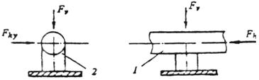
Схема нагрузок на опору
1 - труба; 2 - подвижная опора трубы
2. Горизонтальные нормативные осевые Fhx, Н, и боковые Fhy, Н, нагрузки на подвижные опоры труб от сил трения в опорах нужно определять по формулам:
Fhx = mxGhl; (2)
Fhy = myGhl, (3)
где mx, my - коэффициенты трения в опорах соответственно при перемещении опоры вдоль оси трубопровода и под углом к оси, принимаемые по табл. 1* данного приложения;
Gh - вес 1 м трубопровода в рабочем состоянии, включающий вес трубы, теплоизоляционной конструкции и воды для водяных и конденсатных сетей (вес воды в паропроводах не учитывается), Н/м.
Таблица 1
Коэффициенты трения
|
Коэффициент трения (сталь по стали) |
||
|
mx |
mу |
|
|
Скользящая |
0,3 |
0,3 |
|
Катковая |
0,1 |
0,3 |
|
Шариковая |
0,1 |
0,1 |
|
Подвеска жесткая |
0,1 |
0,1 |
|
Примечание. При применении фторопластовых прокладок под скользящие опоры коэффициенты трения принимаются равными 0,1 |
||
При известной длине тяги коэффициент трения для жесткой подвески следует определять по формуле
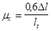
где Dl - тепловое удлинение участка трубопровода от неподвижной опоры до компенсатора, мм;
lt - рабочая длина тяги, мм.
3. Горизонтальные боковые нагрузки с учетом направления их действия должны учитываться при расчете опор, расположенных под гибкими компенсаторами, а также на расстоянии £ 40Dу трубопровода от угла поворота или гибкого компенсатора.
4. При определении нормативной горизонтальной нагрузки на неподвижную опору труб следует учитывать:
4.1. Силы трения в подвижных опорах труб 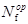
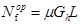
где m - коэффициент трения в подвижных опорах труб;
Gh - вес 1 м трубопровода в рабочем состоянии (п. 2), Н/м;
L - длина трубопровода от неподвижной опоры до компенсатора или угла поворота трассы при самокомпенсации, м.
4.2. Силы трения в сальниковых компенсаторах, 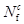
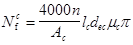
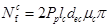
где Рp - рабочее давление теплоносителя (п. 7.6), Па, (но не менее 0,5×106 Па);
lc - длина слоя набивки по оси сальникового компенсатора, м;
dec - наружный диаметр патрубка сальникового компенсатора, м;
mc - коэффициент трения набивки о металл, принимаемый равным 0,15;
n - число болтов компенсатора;
Аc - площадь поперечного сечения набивки сальникового компенсатора, м, определяемая по формуле
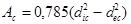
dic - внутренний диаметр корпуса сальникового компенсатора, м.
При определении величины Ncf по формуле (6) величину - 4000n/Ас принимают не менее 1×106 Па. В качестве расчетной принимают большую из сил, полученных по формулам (6) и (7).
4.3. Неуравновешенные силы внутреннего давления при
применении сальниковых компенсаторов 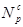
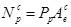
где 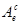
Рр - рабочее давление теплоносителя, Па.
4.4. Распорные усилия сильфонных компенсаторов от
внутреннего давления 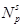
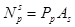
где Аs - эффективная площадь поперечного сечения компенсатора, м2, определяемая по формуле
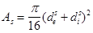
где 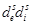
4.5. Жесткость сильфонных компенсаторов 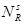
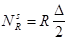
где R - жесткость компенсатора при его сжатии на 1 мм, Н/мм;
D - компенсирующая способность компенсатора, мм.
Значения величин R, D, 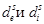
4.6. Распорные усилия сильфонных компенсаторов при их
установке в сочетании с сальниковыми компенсаторами на смежных участках 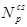
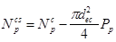
4.7. Силы упругой деформации при гибких компенсаторах и при самокомпенсации, определяемые расчетом труб на компенсацию тепловых удлинений.
4.8. Силы трения трубопроводов при перемещении трубы внутри теплоизоляционной оболочки или силы трения оболочки о грунт при бесканальной прокладке трубопроводов, определяемые по специальным указаниям в зависимости от типа изоляции.
5. Горизонтальную осевую нагрузку на неподвижную опору трубы следует определять:
на концевую опору - как сумму сил, действующих на опору (п. 4);
на промежуточную опору - как разность сумм сил, действующих с каждой стороны опоры; при этом меньшая сумма сил, за исключением неуравновешенных сил внутреннего давления, распорных усилий и жесткости сильфонных компенсаторов, принимается с коэффициентом 0,7.
Примечания: 1. При определении суммарной нагрузки на опоры трубопроводов жесткость сильфонных компенсаторов следует принимать с учетом допускаемых техническими условиями на компенсаторы предельных отклонений величин жесткости.
2. Когда суммы сил, действующих с каждой стороны промежуточной неподвижной опоры, одинаковы, горизонтальная осевая нагрузка на опору определяется как сумма сил, действующих с одной стороны опоры с коэффициентом 0,3.
6. Горизонтальную боковую нагрузку на неподвижную опору трубы следует учитывать при поворотах трассы и от ответвлений трубопроводов.
При двухсторонних ответвлениях трубопроводов боковая нагрузка на опору учитывается от ответвлений с наибольшей нагрузкой.
7. Неподвижные опоры труб должны рассчитываться на наибольшую горизонтальную нагрузку при различных режимах работы трубопроводов, в том числе при открытых и закрытых задвижках.
При кольцевой схеме тепловых сетей должна учитываться возможность движения теплоносителя с любой стороны.
Диаметр штуцера и запорной арматуры d, м, для спуска воды из секционируемого участка трубопровода водяных тепловых сетей, имеющего уклон в одном направлении, следует определять по формуле
где dred, Sl, ired - соответственно приведенный диаметр, м, общая длина, м, и приведенный уклон секционируемого участка трубопровода:
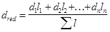
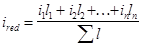
где l1, l2, ... ln - длины отдельных участков трубопровода, м, с диаметрами d1, d2, ... dn, м, при уклонах i1, i2, ... in;
m - коэффициент расхода арматуры, принимаемый для вентилей m = 0,0144, для задвижек m = 0,011;
n - коэффициент, зависящий от времени спуска воды t:
при t = 1 ч. n = 1;
t = 2 ч. n = 0,72,
t = 3 ч. n = 0,58,
t = 4 ч. n = 0,5,
t = 5 ч. n = 0,45.
При размещении спускных устройств в нижней точке тепловой сети диаметр штуцера и запорной арматуры def, м, должен определяться по формуле
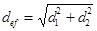
где d1, d2 - диаметры штуцеров и запорной арматуры, м, определяемые по формуле (1) отдельно для каждого, примыкающего к нижней точке участка трубопровода тепловой сети.
Условный проход штуцера и запорной арматуры для спуска воды из секционируемых участков водяных тепловых сетей или конденсата из конденсатных сетей
|
Условный проход трубопровода, мм |
До 65 включ. |
80-125 |
150 |
200-250 |
300-400 |
500 |
600-700 |
800-900 |
1000-1400 |
|
Условный проход штуцера и запорной арматуры для спуска воды или конденсата, мм |
25 |
40 |
50 |
80 |
100 |
150 |
200 |
250 |
300 |
Таблица 1
Условный проход штуцера и запорной арматуры для выпуска воздуха
|
Условный проход трубопровода, мм |
25-80 |
100-150 |
200-300 |
350-400 |
500-700 |
800-1200 |
1400 |
|
Условный проход штуцеров и запорной арматуры для выпуска воздуха, мм |
15 |
20 |
25 |
32 |
40 |
50 |
65 |
Таблица 2
Условный проход штуцера и арматуры для спуска воды и подачи сжатого воздуха
|
Условный проход трубопровода, мм |
50- 80 |
100-150 |
200-250 |
300-400 |
500-600 |
700- 900 |
1000-1400 |
|
Условный проход штуцера и арматуры для спуска воды, мм |
40 |
80 |
100 |
200 |
250 |
300 |
400 |
|
То же, для подачи сжатого воздуха, мм |
25 |
40 |
40 |
50 |
80 |
80 |
100 |
|
Условный проход перемычки, мм |
50 |
80 |
150 |
200 |
300 |
400 |
500 |
Таблица 1
Условный проход штуцера и запорной арматуры для пускового дренажа паропроводов
|
Условный проход паропровода, мм |
До 65 включ. |
80-125 |
150 |
200-250 |
300-400 |
500-600 |
700-800 |
900-1000 |
1200 |
|
Условный проход штуцера и запорной арматуры для пускового дренажа паропроводов, мм |
25 |
32 |
40 |
50 |
80 |
100 |
150 |
150 |
200 |
Таблица 2
Условный проход штуцера для постоянного дренажа паропроводов
|
Условный проход паропровода, мм |
25-40 |
50-65 |
80 |
100-125 |
150 |
200-250 |
300-350 |
400 |
500-600 |
700-800 |
900-1200 |
|
Условный проход штуцера, мм |
20 |
32 |
40 |
50 |
80 |
100 |
150 |
200 |
250 |
300 |
350 |
|
Условный проход дренажного трубопровода, мм |
15 |
25 |
32 |
32 |
40 |
50 |
80 |
80 |
100 |
150 |
150 |
Приложения 12-19 исключить.
|
Способ прокладки |
Температура теплоносителя, °С, не более |
Виды покрытий |
Общая толщина покрытия, мм |
Нормативные документы, ГОСТы или технические условия на материалы |
|
1. Надземный, в тоннелях, по стенам снаружи зданий, внутри зданий, в технических подпольях (для воды и пара) |
Независимо от температуры теплоносителя |
Масляно-битумные в два слоя по грунту ГФ-021 (в качестве консервационного покрытия) |
0,15-0,2 |
ОСТ 6-10-426-79 |
|
300 |
Металлизационное алюминиевое |
0,25-0,3 |
||
|
300 |
Стеклоэмалевые марок: |
ТУ ВНИИСТ |
||
|
105Т в три слоя по одному слою грунта 117 |
0,5-0,6 |
» |
||
|
64/64 в три слоя по грунтовочному подслою из смеси грунтов 70 % № 2015 и 30 % №3132 |
0,5-0,6 |
» |
||
|
13-111 в три слоя по одному слою грунта 117 |
0,5-0,6 |
» |
||
|
596 в один слой по грунтовочному слою из эмали 25М |
0,5 |
» |
||
|
180 |
Органосиликатные (типа ОС-51-03) в три слоя с термообработкой при температуре 200 °С или в четыре слоя с отвердителем естественной сушки |
0,25-0,3 0,45 |
ТУ 84-725-83 » |
|
|
150 |
Изол в два слоя по холодной изольной мастике марки МРБ-Х-Т15 |
5-6 |
ТУ 21-27-37-74 МПСМ |
|
|
Эпоксидные - эмаль ЭП-56 в три слоя по шпатлевке ЭП-0010 в два слоя с последующей термической обработкой при температуре 60 °С |
0,35-0,4 |
ТУ 6-10-1243-72 |
||
|
Металлизационное алюминиевое с дополнительной защитой |
025-0,3 |
|||
|
3. Бесканальный (для воды и пара) |
300 |
Стеклоэмалевые - по п. 2 приложения |
||
|
180 |
Защитные - по п. 2 приложения, кроме изола по изольной мастике |
|||
|
150 |
||||
|
Примечания: 1. Если заводы-изготовители выпускают покрытия с лучшими технико-экономическими показателями, удовлетворяющие требованиям работы в тепловых сетях, то эти покрытия должны применяться взамен указанных в данном приложении. 2. При применении теплоизоляционных материалов или конструкций, исключающих возможность коррозии поверхности труб, защитное покрытие от коррозии предусматривать не требуется. 3. Металлизационное алюминиевое покрытие следует применять для сред с рН от 4,5 до 9,5. |
||||
|
Показатели исходной водопроводной воды (средние за год) |
Способ противокоррозионной и противонакипной обработки воды в зависимости от вида труб |
||||
|
индекс насыщения карбонатом кальция J при 60 °С |
суммарная концентрация хлоридов и сульфатов, мг/л |
перманганатная окисляемость, мг О/л |
стальные трубы без покрытия совместно с оцинкованными трубами |
оцинкованные трубы |
стальные трубы с внутренними неметаллическими покрытиями или термостойкие пластмассовые трубы |
|
1 |
2 |
3 |
4 |
5 |
6 |
|
J < -1,5 |
£ 50 |
0-6 |
ВД |
ВД |
- |
|
J < -1,5 |
> 50 |
0-6 |
ВД + С |
ВД + С |
- |
|
-1,5 £ J <-0,5 |
£ 50 |
0-6 |
С |
С |
- |
|
-0,5 £ J £ 0 |
£ 50 |
0-6 |
С |
- |
- |
|
0 < J £ 0,5 |
£ 50 |
> 3 |
С |
- |
- |
|
0 < J £ 0,5 |
£ 50 |
£ 3 |
С + М |
м |
М |
|
J > 0,5 |
£ 50 |
0-6 |
M |
м |
м |
|
-1,5 £ J £ 0 |
51 - 75 |
0-6 |
С |
с |
- |
|
-1,5 £ J £ 0 |
76 - 150 |
0-6 |
ВД |
с |
- |
|
-1,5 £ J £ 0 |
> 150 |
0-6 |
ВД + С |
ВД |
- |
|
0 < J £ 0,5 |
51 - 200 |
> 3 |
С |
с |
- |
|
0 < J £ 0,5 |
51 - 200 |
£ 3 |
С + М |
с + м |
м |
|
0 < J £ 0,5 |
> 200 |
> 3 |
ВД |
ВД |
- |
|
0 < J £ 0,5 |
> 200 |
£ 3 |
ВД + М |
вд + м |
м |
|
J > 0,5 |
51 - 200 |
0-6 |
С + М |
с + м |
М |
|
J > 0,5 |
201 - 350 |
0-6 |
ВД + М |
с + м |
М |
|
J > 0,5 |
> 350 |
0-6 |
ВД + М |
вд + м |
М |
|
Примечания: 1. В гр. 4-6 приняты следующие обозначения способов обработки воды - противокоррозионная: ВД - вакуумная деаэрация, С - силикатная, противонакипная, М - магнитная, знак «-» означает, что обработка воды не требуется. 2. Значение индекса насыщения карбонатом кальция J определяется в соответствии со СНиП 2.04.02-84, а средние за год концентрации хлоридов, сульфатов и других растворенных в воде веществ - по ГОСТ 2761-84. При подсчете индекса насыщения следует вводить поправку на температуру, при которой определяется водородный показатель рН. 3. Суммарную концентрацию хлоридов и сульфатов следует определять по выражению [Cl-] + [SO24-]. 4. Содержание хлоридов [Cl] в исходной воде согласно ГОСТ 2874-82 не должно превышать 350 мг/л, а сульфатов [SO24-] - 500 мг/л. 5. Использование для горячего водоснабжения исходной воды с окисляемостью более 6 мг О/л, определенной методом окисления органических веществ перманганатом калия в кислотной среде, как правило, не допускается. При допущении органами Минздрава СССР цветности исходной воды до 35° окисляемость воды может быть допущена более 6 мг О/л. 6. При наличии в тепловом пункте пара вместо вакуумной деаэрации следует предусматривать деаэрацию при атмосферном давлении с обязательной установкой охладителей деаэрированной воды. 7. Если в исходной воде концентрация свободной углекислоты [CO2] превышает 10 мг/л, то после вакуумной деаэрации следует проводить подщелачивание. 8. Магнитная обработка применяется при общей жесткости воды не более 10 мг-экв/л и карбонатной жесткости (щелочности) более 4 мг-экв/л. Напряженность магнитного поля в рабочем зазоре магнитного аппарата на должна превышать 159×103 А/Н. 9. При содержании в воде железа [Fe2+;3+] более 0,3 мг/л следует предусматривать обезжелезивание воды независимо от наличия других способов обработки воды. 10. Силикатную обработку воды и подщелачивание следует предусматривать путем добавления в исходную воду раствора жидкого натриевого стекла по ГОСТ 13078-81. 11. При среднечасовом расходе воды на горячее водоснабжение менее 50 т/ч деаэрацию воды предусматривать не следует. |
|||||
Годовые расходы теплоты, кДж, жилыми и общественными зданиями определяются по формулам:
на отопление жилых или общественных зданий:
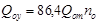
на вентиляцию общественных зданий:
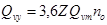
на горячее водоснабжение жилых или общественных зданий:
, (3)
где no - продолжительность отопительного периода, сут, соответствующая периоду со средней суточной температурой наружного воздуха 8 °C и ниже, принимаемому по СНиП 2.01.01-82;
Z - усредненное за отопительный период число часов работы системы вентиляции общественных зданий в течение суток (при отсутствии данных принимается равным 16 ч);
nhy - расчетное число суток в году работы системы горячего водоснабжения. При отсутствии данных следует принимать 350 сут.
1. Расчетный расход воды, м3/ч, для подпитки тепловых сетей следует принимать:
а) в закрытых системах теплоснабжения - численно равным 0,75 % фактического объема воды в трубопроводах тепловых сетей и присоединенных к ним системах отопления и вентиляции зданий. При этом для участков тепловых сетей длиной более 5 км от источников теплоты без распределения теплоты расчетный расход воды следует принимать равным 0,5 % объема воды в этих трубопроводах;
б) в открытых системах теплоснабжения - равным расчетному среднему расходу воды на горячее водоснабжение с коэффициентом 1,2 плюс 0,75 % фактического объема воды в трубопроводах тепловых сетей и присоединенных к ним системах отопления, вентиляции и горячего водоснабжения зданий. При этом для участков тепловых сетей длиной более 5 км от источников теплоты без распределения теплоты расчетный расход воды следует принимать равным 0,5 % объема воды в этих трубопроводах;
в) для отдельных тепловых сетей горячего водоснабжения при наличии баков-аккумуляторов - равным расчетному среднему расходу воды на горячее водоснабжение с коэффициентом 1,2; при отсутствии баков - по максимальному расходу воды на горячее водоснабжение плюс (в обоих случаях) 0,75 % фактического объема воды в трубопроводах сетей и присоединенных к ним системах горячего водоснабжения зданий.
2. Объем воды в системах теплоснабжения при отсутствии данных по фактическим объемам воды допускается принимать равным 65 м3 на 1 МВт расчетного теплового потока при закрытой системе теплоснабжения 70 м3 на 1 МВт - при открытой системе и 30 м3 на 1 МВт - при отдельных сетях горячего водоснабжения.
3. Для открытых и закрытых систем теплоснабжения должна предусматриваться дополнительно аварийная подпитка химически не обработанной и не деаэрированной водой, расход которой принимается в количестве 2 % объема воды в трубопроводах тепловых сетей и присоединенных к ним системах отопления, вентиляции и в системах горячего водоснабжения для открытых систем теплоснабжения.
При наличии нескольких отдельных тепловых сетей, отходящих от коллектора теплоисточника, аварийную подпитку допускается определять только для одной наибольшей по объему тепловой сети.
Для открытых систем теплоснабжения аварийная подпитка должна обеспечиваться только из систем хозяйственно-питьевого водоснабжения.
4. Для открытых систем теплоснабжения, а также при отдельных тепловых сетях на горячее водоснабжение должны предусматриваться баки-аккумуляторы химически обработанной и деаэрированной подпиточной воды, расчетной емкостью равной десятикратной величине среднего расхода воды на горячее водоснабжение.
В закрытых системах теплоснабжения на источниках теплоты мощностью 100 МВт и более следует предусматривать установку баков запаса химически обработанной и деаэрированной подпиточной воды емкостью 3 % объема воды в системе теплоснабжения. схема включения баков запаса должна обеспечивать непрерывное обновление воды в баках. Количество баков независимо от системы теплоснабжения принимается не менее двух по 50 % рабочего объема.
5. Размещение баков-аккумуляторов горячей воды возможно как на источнике теплоты, так и в районах теплопотребления. При этом на источнике теплоты должны предусматриваться баки-аккумуляторы емкостью не менее 25 % общей расчетной емкости баков. На территории источников теплоты установку баков-аккумуляторов следует предусматривать по нормам Минтопэнерго России.
6. Внутренняя поверхность баков должна быть защищена от коррозии, а вода в них - от аэрации.
7. Группа баков должна быть ограждена валом высотой не менее 0,5 м. Обвалованная территория должна вмещать объем наибольшего бака и иметь отвод воды в канализацию.
8. Устанавливать баки-аккумуляторы горячей воды в жилых кварталах не допускается. Расстояние от баков-аккумуляторов горячей воды до границы жилых кварталов должно быть не менее 30 м. При этом на грунтах I типа просадочности расстояние, кроме того, должно быть не менее 1,5 толщины слоя просадочного грунта.
При размещении баков-аккумуляторов вне территории источников теплоты следует предусматривать их ограждение высотой не менее 2,5 м для исключения доступа посторонних лиц к бакам.
СОДЕРЖАНИЕ